№1 Копирайтинг от А до Я — Skillbox
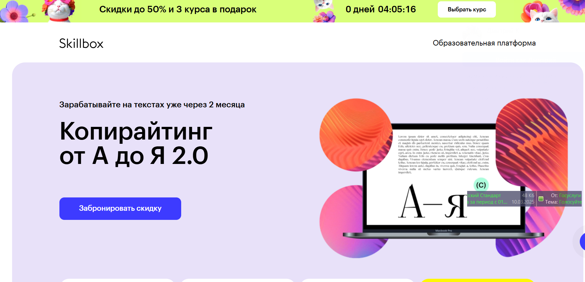
Сайт: https://skillbox.ru/course/copywriter/
Стоимость обучения: 2 457 р/мес (при оплате на протяжении 12 месяцев)
Итоговая сумма: 29 484 р.
Вы получите сертификат — да, это станет подтверждением успешного завершения курса и положительно скажется на вашей карьере.
В ходе обучения вы освоите навыки создания привлекательных текстов, подходящих для различных аудиторий, а также научитесь эффективно захватывать их внимание. Вы приобретете умения, позволяющие вам позиционировать себя как профессионала и увеличивать свои доходы.
- Чек-листы и образцы для написания успешных материалов
- Портфолио из пяти работ
- Практические задания, основанные на реальных брифтах
- Неограниченный доступ к материалам курса на постоянной основе
Кому будет полезен данный курс
Тем, кто только начинает писать
Вы ознакомитесь с основами копирайтинга, изучите методы написания убедительных текстов, сбора информации, организации контента и создания привлекательных материалов.
Специалистам по контент-маркетингу и SMM
Вы научитесь составлять продающие тексты для соцсетей, email-рассылок, целевых страниц и других рекламных каналов, что позволит расширить вашу аудиторию и увеличить лояльность клиентов.
Студентам и окончившим гуманитарные специальности
Вы обретете практический опыт в создании коммерческих текстов и решении конкретных бизнес-задач.
Тем, кто хочет зарабатывать на текстах
Вы изучите профессию копирайтера. Вас научат качественно создавать тексты в различных форматах, находить интересные проекты, предлагать свои услуги и начинать получать доход.
Что вы сможете освоить
Создание качественных текстов
Вы будете работать в разных стилях и форматах, добавляя в тексты наглядные примеры.
Работа с брифами
Вы научитесь методам быстрого анализа заданий и эффективному взаимодействию с клиентами.
Текст для целевой аудитории
Вы научитесь выявлять потребности читателей и создавать контент, который будет интересен и полезен.
Редактирование текстов
Вы поймете, как избавиться от излишней формальности и лишнего, а также освоите приемы, делающие тексты более увлекательными.
Презентация собственных работ
Вы научитесь адекватно реагировать на замечания и обсуждения, а также находить общий язык с клиентами.
Создание портфолио
Вы узнаете, как выбрать лучшие работы для своего портфолио, обосновывать свою стоимость и успешно презентовать себя заказчикам.
Содержание курса
Вас ожидает увлекательная программа с вебинарами и практическими заданиями на основе реальных примеров.
- 8 тематических модулей
- 41 онлайн-урок
- Основы профессии
- Типы текстов – статьи
- Типы текстов – карточки
- Типы текстов – email-рассылки
- Другие форматы текстов
- Что делает текст убедительным
- Методы работы с клиентом и организация труда
- Личный брендинг
- Заключительный проект: создание текстового контента по брифу заказчика
Спикеры курса
Сергей Король
Контент-директор компании Яндекс
Людмила Сарычева
Руководитель редакторского бюро «Гладлакс», редактор и автор книг по текстам
Полина Накрайникова
Редактор роста в проекте «Горящая изба»
№2 Факультет редактуры и копирайтинга в Geekbrains
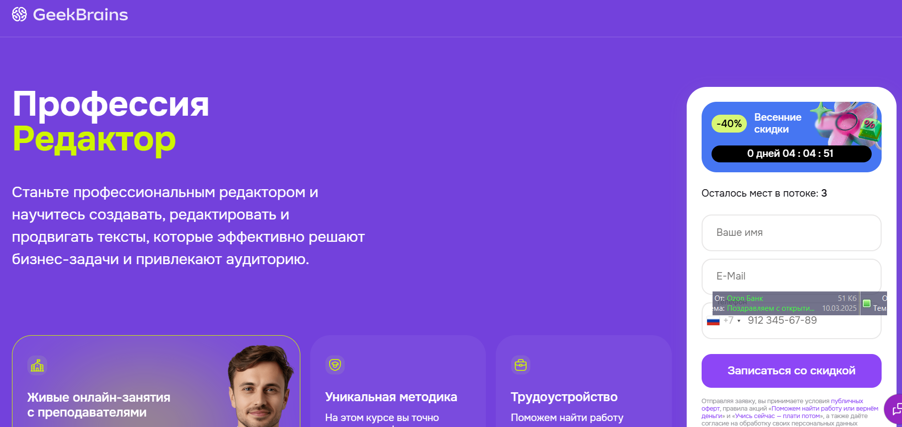
Ссылка на сайт: https://gb.ru/geek_university/copywriter
Диплом о профессиональной переподготовке — доступен
Государственная образовательная лицензия — имеется
Цены: начиная с 2 907 руб. в месяц с опцией рассрочки на срок до 36 месяцев
ФОРМАТЫ ОБУЧЕНИЯ:
Занятия в группах под руководством наставника
Онлайн-лекции и вебинары
Видеоматериалы с обучающими уроками
ДЛИТЕЛЬНОСТЬ — 12 месяцев (два занятия в неделю)
РЕЗУЛЬТАТ — Диплом
Четыре работы для портфолио
ГАРАНТИЯ — Трудоустройство по завершении курса
Кому может быть полезен данный курс
Копирайтерам
Вы освоите методы создания текстов, которые ярко демонстрируют, как предлагаемый вами продукт решает проблемы клиентов. Получите навыки доступного и продуктивного объяснения.
Тем, кто желает сменить профессию
Станьте квалифицированным специалистом в выбранной области, научитесь создавать информационные материалы и соберите портфолио для старта карьеры.
SMM-менеджерам и email-маркетологам
Расширьте свои горизонты, изучите искусство работы с текстами на уровне редактора, повышайте конверсии и увеличивайте свою эффективность.
Учебная программа
1
Подготовительный этап: выбор профессии
Создание текстов
Работа с данными
Редактирование
Введение в профессию
2
Юридические аспекты
Создание контента для интернета
Этика медиапейза
Правовые вопросы
Основы авторского права
Как защитить свои права: редакторы и граждане
Риски, связанные с контентом: потенциально опасные темы
Юридические нюансы редактирования в разных медиах
3
Разработка контент-стратегии
Основы верстки
Создание цифровых проектов
Аналитика
Разработка контент-стратегии
Что такое контент-стратегия
Каналы распространения контента
Редакционная политика
Преобразование в реальность
4
Работа в команде
Взаимодействие с клиентами
Личный опыт фриланса
Командная деятельность
Роли в команде
Распределение задач в коллективе
Основные инструменты проектной работы
Поиск подрядчиков
Процесс найма сотрудников
Как контролировать выполнение работ: оценка, обратная связь, оплата, документация, рекомендации
Бюджет
Наши эксперты
Павел Федоров — Продакшен-директор КБ «Палиндром»
Создатель Telegram-канала «Паша и его прокрастинация», автор подкастов «Поредачим» и «Что-то горит». Работал над спецпроектами в «Лайфхакере», занимался маркетингом в «ВКонтакте», управлял контентом на Profi.ru, редактировал в «Нетологии».
Татьяна Симакова — Главный редактор сайта The Village
Основательница медиа «Большая деревня», вела авторские колонки для Wonderzine, Colta.ru, OpenSpace и «Афиша Daily».
Вы развеете навыки написания текстов для разнообразных целей и аудиторий. Создавайте яркие рекламные материалы, которые невозможно не заметить.
№3 Коммерческий редактор/копирайтер — Нетология
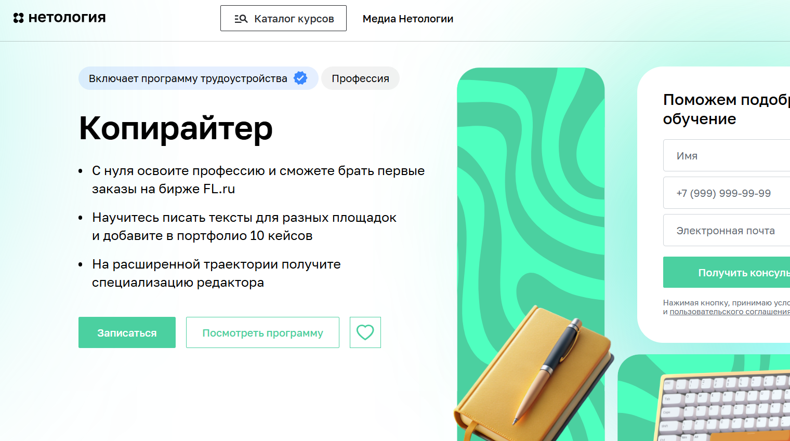
Сайт: https://netology.ru/programs/kontent-menedjer-edpro#/presentation
Формат обучения: вебинары, видеоуроки, тестирования, практические занятия и итоговая работа.
Контент-редактор является важным элементом в осуществлении целей бизнеса через текстовые материалы. Его задача – выбрать подходящие форматы, собрать команду, разработать стратегию контента и оценить результаты.
Занятия коммерческого редактора охватывают гораздо больше, чем простую корректировку. Это требует глубокого понимания целей и навыков управления проектами.
Кому подойдет курс
Журналисты, копирайтеры и новички в редактировании
Изучив цифровые форматы, вы сможете расширить свои возможности и работать с корпоративным контентом.
Маркетологи, специалисты по PR и SMM
Вы овладеете навыками создания контента для продвижения бренда и научитесь взаимодействовать с редакцией.
Лица, задумывающиеся о смене профессии
Вы освоите различные форматы контента, будете способны разрабатывать стратегии и управлять редакционной командой.
Чему вы сможете научиться
Создание текстов для решения бизнес-задач
Сюда входит написание статей для корпоративных блогов, контента для социальных медиа и почтовых рассылок.
Верстка текстов и лендингов
Вы научитесь работать с инструментами, такими как Tilda, Readymag, Setka и WordPress для создания информативных материалов.
Применение техник сторителлинга
Выбор иллюстраций с учетом типографии и сохранение текстовой эстетики.
Организация редакционных процессов
Планирование мероприятий команды, формирование редакционных стандартов и контент-планов, установка ключевых показателей.
Управление распространением контента
Определение каналов для продвижения, расчет бюджета на дистрибуцию и создание медиаплана.
Работа с анализом данных
Мониторинг показателей с использованием веб-аналитических инструментов для оценки эффективности контента и маркетинговых стратегий.
Итоговый проект
Вы разработаете контент-стратегию или бизнес-план для специального проекта, основываясь на реальной задаче. Если у вас нет собственной идеи, вам предложат учебное задание.
Учебные возможности
Коммерческий редактор — с основ:
Для тех, кто запрещен начать свою карьеру.
8,5 месяцев.
330 часов.
52 лекции по 1,5 часа.
27 домашних заданий с проверкой.
Содержание курса:
Работа с текстами.
Упаковка контента.
Специализация: основы контент-маркетинга.
Вы будете обучены написанию для социальных медиа, созданию лендингов, ведению корпоративных блогов и разработке почтовых рассылок. Также изучите работу с Readymag и получите знания о структуре и методах верстки лендингов. Вы также узнаете, как организовать командную работу и построить контент-стратегию.
Рассрочка: 3 785 р / месяц в течение 18 месяцев
Общая стоимость: 68 140 р.
Коммерческий редактор PRO
Для опытных профессионалов, стремящихся стать редакторами.
7 месяцев.
309 или 262 часа, в зависимости от специализации.
42 или 48 лекций по 1,5 часа.
18 или 12 домашних заданий с проверкой.
Содержание программы:
Упаковка контента.
Сторителлинг.
Выбор специализации: основы контент-маркетинга или создание специализированных проектов.
Вы познакомитесь с различными форматами контента и научитесь оценивать их эффективность. Освоите платформы Tilda, Readymag, Setka и WordPress. Узнаете, как работать в команде и монетизировать свои проекты.
Рассрочка: 3 326 р / месяц на 18 месяцев
Итоговая сумма: 59 880 р.
Образовательная программа
Основной курс
Создание текстов для маркетинга
Редактирование и упаковка материалов
Сторителлинг
Полный пакет «Коммерческий редактор PRO»
Направления
Контент-стратег
Разработка специализированных проектов
Коммерческий автор от TexTerra
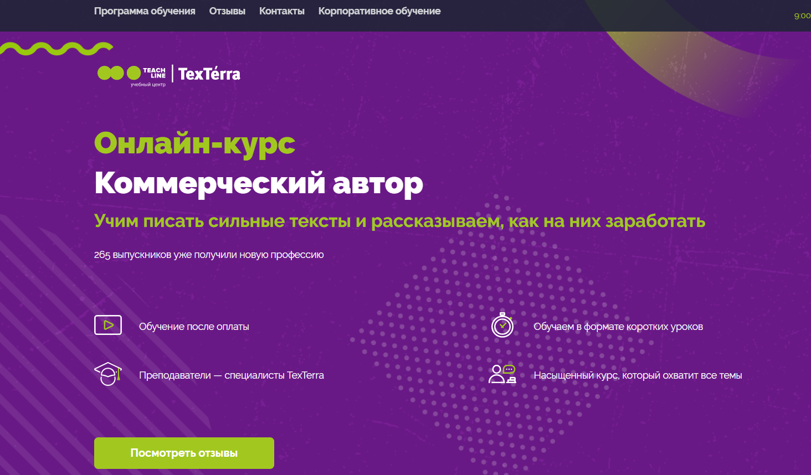
Сайт: https://teachline.ru/courses/commercial-author/
Стоимость: 12000-26000 р.
Продолжительность: 14 видеоуроков по 1,5 часа
По завершении вы сможете получить диплом и рекомендательное письмо, что облегчит поиск клиентов.
Курс поможет вам:
Быстро адаптироваться к новым профессиональным условиям, находить заказы и зарабатывать онлайн из любой точки мира. Увеличить стоимость своих услуг, развиваясь от начинающего копирайтера до специалиста в среднем и высоком сегментах. Научиться создавать тексты для бизнеса, даже если у вас нет опыта в составлении анонсов, рекламных текстов, кейсов или статей – курс предоставит все необходимые навыки.
Что вас ожидает?
14 видеоуроков по 1,5 часа. Обратная связь по выполненным заданиям и возможность задать вопросы преподавателю. Знания и навыки в создании разнообразных текстов — от статей до лендингов. Базовые знания SEO и интернет-маркетинга. Компетенции для профессиональной корректуры и редактирования. Инструменты для поиска клиентов, включая менее известные. Доступ к дополнительным материалам и записям лекций в течение года.
Содержание курса
Основы копирайтинга. Изучение задач и особенностей копирайтинга в контент-маркетинге. Определение обязанностей копирайтера и возможностей для карьерного роста. Обсуждение этического кодекса.
Типы текстового контента и особенности его создания. Какой контент считается актуальным и полезным. Основные типы контента и их разработка. Текст для лендингов. Специфика содержания и структура текста, включая блоки и формы обратной связи. Как текст лендинга становится значимым элементом.
Форматы контента, интеграция нестандартных элементов, таких как инфографика, видео, тесты, white paper. Понимание ньюсджекинга и его преимущества. Определение самых вирусных видов контента и способы оценки вовлеченности. Важные аспекты в B2C и B2B контенте.
Исследование источников. Подбор темы, оптимизация контента, сбор информации и проверка ее достоверности (фактчекинг). Написание глубоких статей по темам, в которых вы не являетесь экспертом.
Структура и оформление текста. Различие восприятия печатного и онлайн-контента. Роль структуры в восприятии. Основы HTML для коммерческих авторов. Оформление публикаций.
Примеры удачного и неудачного оформления. Стилистика. Как базовые стилистические навыки помогают создавать интересные тексты. Как аудитория реагирует на текст в различных стилях.
Журналистика в коммерческом писательстве. Сравнение коммерческого автора и журналиста. Критерии, по которым можно оценить компетенции журналиста. Форматы контента в журналистике. Применение креативного письма.
Упражнения для развития письменного навыка различными методами: утренние страницы, фрирайтинг и другие. Текстовый контент для социальных сетей: посты и рекламные объявления.
Общая концепция контента в соцсетях: её цель и применение. Как разработать рубрикатор и контент-план. Форматы контента для различных социальных платформ.
Редакция и корректура. Как проводить вычитку и редактирование без искажения текста. Основные правила редактирования и задачи, на которые следует обращать внимание.
Основы SEO. Как привлекать трафик через поисковые системы. Для чего необходима оптимизация текстов.
Поиск клиентов и реализация услуг. Как грамотно заявить о себе и развивать личный бренд. Как создать портфолио и составить коммерческое предложение. Анализ ошибок, ответы на вопросы и практические рекомендации для завершения курса.
Копирайтер для экспертов и онлайн-школ — Ольга Придейная
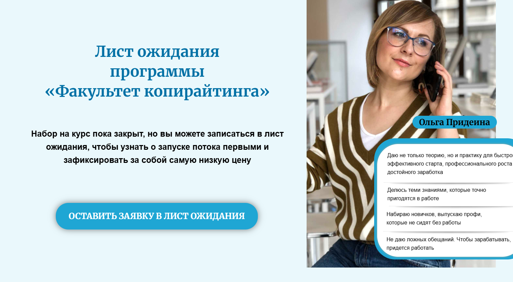
Сайт: https://prideina-course.ru/
Стоимость:
Самостоятельный — 22500 р
Базовый — 29500 р
“Хочу максимум!” — 45500 р
Когда курс будет полезен
Для тех, кто:
мечтает стать копирайтером и хочет удаленную работу,
любит писать и хочет сделать из этого увлечения карьеру,
желающим легко находить работу даже в сложные времена,
уже пишет тексты для Instagram и хочет расширить свои услуги,
намеревается получить не только теоретические, но и практические умения,
хочет научиться создавать высокооплачиваемый контент.
Курс окажется полезным
Энтузиастам копирайтинга
Вы овладеете навыками написания текстов для различных форматов, таких как лендинги, email-рассылки, лид-магниты и посты в Instagram, включая как экспертные, так и коммерческие сообщения. По окончании курса вы сможете создать свое портфолио и начать работать в этой области.
Для опытных копирайтеров
Вы улучшите качество контента для специалистов, повысите свои маркетинговые навыки и “упакуете” себя, увеличив стоимость своих услуг. Также узнаете важные аспекты инфобизнеса и принципы работы экспертов и онлайн-школ.
SMM-специалистам, контент-менеджерам и администраторам Instagram
Вы научитесь создавать убедительные сообщения, которые привлечут внимание читателей с первых строк, писать так, чтобы выделять преимущества и привлекать новую аудиторию с помощью текста. Станете универсальным специалистом, что позволит вам получать более высокую оплату.
Структура курса
Месяц активной работы с текстами.
Обучение проходит в формате онлайн на платформе Getcourse.
Каждую неделю вы будете участвовать в живых вебинарах, которые предоставят вам новые знания. В общей сложности проведётся 4 вебинара, где вы сможете задать вопросы и разобрать часто встречающиеся ошибки. Если по какой-либо причине вам не удастся принять участие в вебинаре, будут доступны записи.
Каждый блок курса включает видеоуроки и вспомогательные материалы, такие как чек-листы и инструкции.
Два раза в неделю вам предстоит выполнять домашние задания в удобное для вас время.
Вы получите детализированную индивидуальную обратную связь в аудиоформате, преподаватели уделят внимание вашим работам.
Кроме того, будет создан групповой чат, где вы сможете общаться, получать поддержку и оперативно решать возникшие вопросы.
В чате у вас будет возможность взаимодействовать с автором курса и другими участниками.
На пятой неделе вам будет предложено пройти стажировку на реальных проектах (для тарифов «Базовый» и «Хочу максимум»), что предоставит вам ценную возможность взаимодействовать с клиентами и работать во время обучения.
По завершении курса доступ к чату вакансий в Telegram упростит ваш поиск работы.
Темы курса
[спойлер]
Первая неделя
1-й блок: Создание эффективных коммерческих текстов. Как продавать с помощью текста.
Умение писать просто и убедительно.
Структура текста.
Эффективные формулы для продаж.
Как привлечь внимание читателя с помощью яркого начала.
Психология покупок: как представить продукт или услугу через призму выгоды.
Призыв к действию: формулы и подходы.
Как преодолеть смущение при написании текстов для продаж.
Вторая неделя
2-й блок: Написание текстов для лендингов.
Создание лендинга для бесплатного вебинара: последовательные этапы и блоки.
Как составлять привлекательные заголовки и подзаголовки.
Каковы триггеры, которые стоит использовать.
Что включает текст лендинга.
Создание лендингов — одна из самых актуальных областей работы в копирайтинге.
3-й блок: Тексты для email-рассылок.
Основные принципы создания email-рассылок.
Как грамотно подготовить email-рассылку для специалистов, чтобы её читали до конца.
Разные виды рассылок.
Структура рассылки для вебинара: что и в каком порядке писать.
Структура письма.
Обязанности копирайтера.
Методы оценки успешности рассылки и повышения её эффективности.
Как избежать попадания в «Спам».
Третья неделя
4-й блок: Создание экспертного контента для Instagram.
Как выстраивать доверительные отношения с подписчиками.
Ключевые принципы написания экспертных текстов.
Адаптация стиля под личность эксперта и построение коммуникации.
Создание контентной воронки и методы вовлечения читателей в постах и историях.
Разработка контент-плана и стратегии для воронки.
Типы контента и их цели в Instagram.
5-й блок: Как привлечь максимальное количество участников на вебинар через Instagram эксперта.
Организация блога эксперта: методы увеличения посещаемости вебинара.
Классические и альтернативные форматы анонсирующих постов.
Сторителлинг: Искусство написания историй
Как привлечь внимание аудитории
Неделя 4
Блок 6: Лид-магниты.
Определение лид-магнитов
Лид-магниты – это инструменты, способствующие привлечению потенциальных клиентов. Они помогают копирайтерам как привлечь внимание, так и извлечь из этого пользу.
Типы лид-магнитов и их функции
Существует множество видов лид-магнитов, каждый из которых выполняет свою уникальную задачу и подходит для конкретных целей.
Принципы создания лид-магнитов
Имеются определенные правила, которые помогут разработать успешные лид-магниты.
Дополнительные занятия:
- Урок от психолога «Как победить страхи начинающего копирайтера».
- Урок «Создание текстов для лендингов платного продукта».
- Урок «Управление копирайтинг-проектами: оптимизация задач».
- Урок «Планирование и управление процессами».
- Урок «Позиционирование контента для обучающих продуктов».
- Урок «Разработка прототипа лендинга».
- Урок «Работа с Яндекс.Дзен».
- Урок «Написание материалов для таргетированной рекламы».
Стажировка
Доступные планы: «Базовый» и «Хочу максимум».
Неделя 5
Стажировка (для тарифов «Базовый» и «Хочу максимум»).
Автор курса
Ольга Придеина
Копирайтер, филолог и разработчик образовательных программ в области копирайтинга.
- 5 лет практического опыта в копирайтинге.
- Создание более 4,5 тысяч коммерческих текстов для разных клиентов.
- Более 600 дипломированных выпускников школы копирайтинга, многие из которых сотрудничают с популярными блогерами.
Курс по копирайтингу
Копирайтинг — это важный навык для специалистов современности. Он может стать как дополнительным, так и основным источником дохода. Школа юного копирайтера предлагает всеобъемлющие знания и навыки, необходимые для создания коммерчески успешных текстов. Курс охватывает основы копирайтинга, особенности написания текстов для различных стилей и целей, а также технические параметры и методы редактирования. Участники выполняют практические задания, которые помогают развивать креативный подход и улучшать качество своих работ.
Курс включает восемь онлайн-занятий с выполнением домашних заданий. Практика — это ключ к успеху, поэтому будьте готовы к серьезной работе. После каждой лекции студенты получают задания и комментарии от преподавателя, а также возможность обсуждать тексты своих коллег.
Занятия происходят по будням с 10:00 до 12:00, дважды в неделю.
Курс от Ирины Голдман
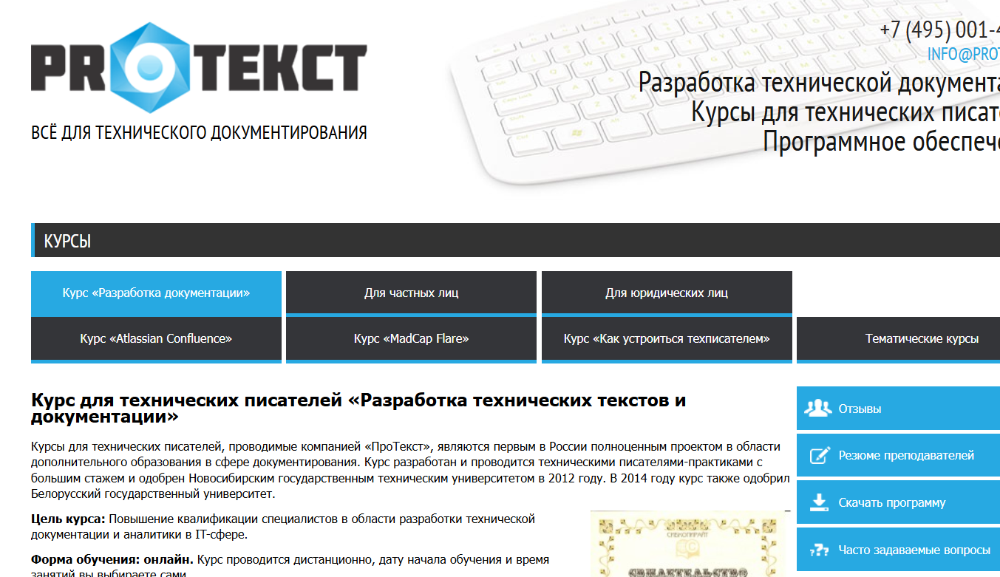
Сайт: https://spacecool.ru/copywriting
Стоимость: 8 888 РУБЛЕЙ
Интенсивный курс по копирайтингу, проводимый опытным редактором журнала Cosmo и известным блогером Ириной Голдман.
Продолжительность курса — 4 недели.
7 уникальных уроков длительностью от 1,5 до 2,5 часов: 6 записанных и 1 в онлайн-формате.
6 домашних заданий с индивидуальной проверкой и мониторингом вашего прогресса.
Курс по техническому писательству
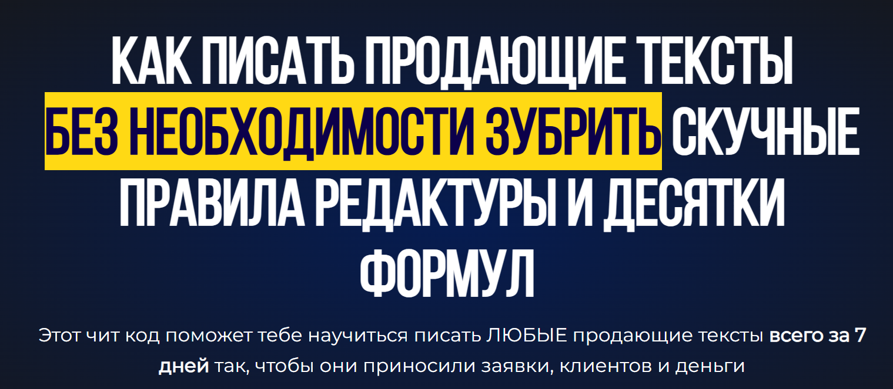
Сайт: https://protext.su/pro/kurs/
Продолжительность курса: 72 часа.
Стоимость: 19800 руб. для физических и 24900 руб. для юридических лиц.
Цель курса
Усовершенствование профессиональных навыков по подготовке технической документации и аналитических материалов в сфере IT. Форма обучения — онлайн. Вы самостоятельно выбираете дату начала и время занятий.
Что вы сможете получить по окончании курса?
- Для новичков курс поможет лучше понять профессию технического писателя и подготовить первые проекты для своего портфолио.
- Вы приобретете уверенность и получите множество новой информации и впечатлений.
- Вам будет выдан сертификат от профильной компании, что поможет сделать первый шаг в новую карьеру.
- Если у вас уже есть опыт в техническом писательстве, курс позволит выявить слабые стороны и усовершенствовать навыки.
- Не помешают обсуждения профессиональных трудностей и новые знания, которые могут открыть для вас новые карьерные перспективы.
Программа курса
[спойлер]
- Вводный модуль о профессии
- Как стать техническим писателем
- Юридические аспекты и сферы работы
- Типы материалов и их целевая аудитория
- Стандарты оформления документации и статей
- Стиль написания технических материалов
- Основы оформления документов
- Методика подготовки документации для ПО
- Методика создания аналитических материалов
- Разработка видеодокументации
- Создание презентаций
- Описание программного кода и схем
- Составление технических заданий и маркетинговых текстов
- Работа с документацией для перевода
- Технические переводы и их оформление
- Выбор ПО для работы
- Особенности работы технического редактора
- Документирование в соответствии с установленными стандартами
- Итоговое практическое задание.
[/спойлер]
Курс продвинутого копирайтинга
Сайт: https://copywriterinfo.ru/
Курс требует оплаты.
Ожидаемые достижения для участников курса
[спойлер]
- Регулярные занятия письмом: переписывайтесь и создавайте новые тексты, что является основой вашего обучения.
- 49 видеоуроков, доступных для изучения в любое время с возможностью возврата к ним по мере необходимости.
- Личный кабинет, доступный как с планшета, так и с настольного компьютера, где содержание структурировано для вашего удобства.
[/спойлер]
- По завершении каждого модуля вас ждут практические задания, направленные на улучшение навыков копирайтинга.
- Вы получите ответы на все свои вопросы в комментариях, с обязательной обратной связью в течение суток.
- Все учебные материалы содержат реальные примеры, что делает их более понятными для усвоения.
- Неограниченный доступ к образовательным ресурсам курса с возможностью их просмотра в любое время.
- Создание профессионального портфолио с рекламными текстами, написанными вами в процессе обучения.
- Каждую неделю мы проводим вебинары, где вы сможете получить обратную связь по своим текстам и решить возникающие вопросы.
- Гибкий формат обучения: возможность самостоятельно осваивать материалы и получать помощь даже после завершения курса.
Вы можете присоединиться к нашей группе в любое время, даже если другие студенты уже прошли курс. Нет никакой спешки — вы сможете обучаться в комфортном для вас ритме. Каждое воскресенье мы проводим вебинар, на котором я предоставляю обратную связь по всем текстам, присланным участниками. Если вы пропустите встречу, находитесь в отпуске или на лечении, не переживайте — вы сможете поучаствовать позже или посмотреть запись.
Авторский Курс — Надежда Сокирская
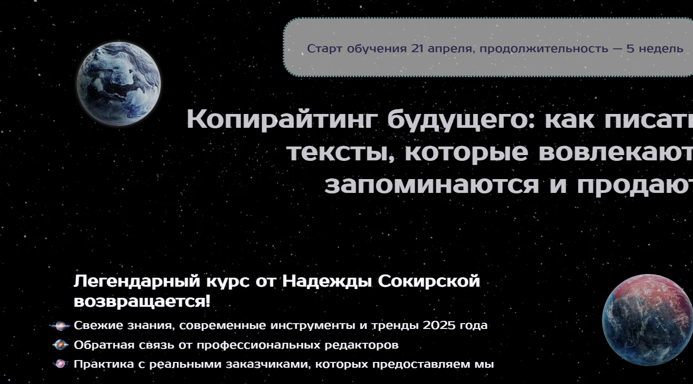
Сайт: https://sokirskaya.ru/ Длительность: 6 недель Стоимость: Базовый курс — 35000р Больше практики — 46000р Максимум практики — 85000р
Кому подойдет этот курс?
Этот курс будет полезен для тех, кто желает заниматься написанием заказных текстов, но не имеет предварительного опыта. Ваше образование и предыдущая работа не имеют значения. Если вы готовы учиться и трудиться, за 6 недель вы сможете приобрести необходимые навыки, начать взаимодействовать с реальными клиентами и сформировать свое портфолио. Курс также подойдет тем, кто уже работает с текстами, но хочет увеличить свой доход. Вы сможете проанализировать свои сильные и слабые стороны, оценить ошибки, получить новые знания и уверенность. Вы научитесь создавать контент, который способствует увеличению продаж и привлекает внимание владельцев бизнеса и блогеров.
Какова структура курса?
— Шесть насыщенных недель обучения с новыми уроками каждый рабочий день;
— 12 практических заданий;
— Работа в группах по 10-12 человек под руководством наставника;
— Проверка всех заданий с детальной обратной связью от куратора;
— Реальные задания от клиентов с получением отзывов;
— Создание актуального портфолио на платформе Tilda в процессе курса;
— Поддерживающий Telegram-канал с коучем;
— Система накопления баллов и призов.
Содержание курса
— Введение с подробными инструкциями доступно сразу после оплаты;
— Поиск работы. Открывается со второго модуля;
— Основные умения копирайтера;
— Написание текстов, способствующих увеличению продаж. Практика с клиентами;
— Контент для социальных сетей. Практика с заказчиками;
— Портфолио. Итоговые занятия;
— Дополнительные тренажеры для практики общения с клиентами.
Автор курса
Надя Сокирская
Журналист, редактор и блогер с образованием в Литературном институте, где изучала авторские навыки. У нее более десяти лет опыта в СМИ — от редактора на радиостанциях «Русская служба новостей» и «Говорит Москва», до ответственного редактора на сайте «Комсомольская правда». С 2014 по 2017 год занимала позицию главного редактора на Леди.Mail.Ru. Обучала интернет-журналистике на факультете журналистики МГУ, руководила стажировками и сотрудничала с авторами. Запустила блог, который за десять месяцев смог собрать более 100 тысяч подписчиков. Преподает в школе телевидения «Останкино ТВ».
Кураторы
Наталья Семенова
Шеф-редактор PR-отдела Правительства Москвы. Ранее работала ответственным редактором на aif.ru и шеф-редактором на сайте телеканала Минобороны РФ «Звезда».
Алена Костомарова
Шеф-редактор и заместитель руководителя отдела спецпроектов в МИА «Россия сегодня». Способствует развитию имиджа брендов и решению бизнес-задач. Ранее сотрудничала с Geo, РБК Lifestyle, Snob и другими медиа. Опыт работы с текстами составляет 14 лет.
Конструктор продающего текста от Школы копирайтинга Дениса Каплунова
Сайт: https://deniskaplunov.com/kpt/ Стоимость: Стандартный курс: 18 525 руб Премиум курс: 37 275 руб
На протяжении полутора месяцев, основываясь на более чем 70 примерах, вы изучите 100 самых эффективных методов копирайтинга и сможете увеличить конверсии своих текстов минимум в три раза.
Кому будет интересен этот курс?
Предпринимателям и владельцам бизнесов
Вы освоите создание эффективных текстов, которые способны привлечь в 3-5 раз больше клиентов и увеличить доход.
Копирайтерам (как фрилансерам, так и штатным)
Вы сможете усовершенствовать свои навыки, освоить новые техники и повысить продуктивность, что позволит вам зарабатывать в 3-5 раз больше.
Экспертам и консультантам
Вы научитесь писать тексты для продвижения ваших услуг, что поможет увеличить средний чек и поднять ваш доход в 3-5 раз.
Маркетологам и менеджерам по продажам
Вы улучшите свои навыки, что даст вам конкурентные преимущества и поможет значительно повысить результаты.
Что вас ожидает на курсе?
— Полтора месяца обучения;
— Более 100 техник копирайтинга;
— Проверка домашних заданий;
— Более 70 примеров готовых текстов;
— Гибкий график обучения;
— 18 видеоуроков;
— Конспекты всех лекций;
— Дополнительные ресурсы.
Содержание курса
«Заголовки»
#1
— Основная задача заголовка.
— Три ключевых функции заголовка.
— Как использовать «надзаголовок», чтобы привлечь внимание читателя.
— Примеры эффективных надзаголовков из продающих текстов.
— 20 формул для создания заголовков.
— Как и когда использовать подзаголовок, его три основные функции.
— 20 примеров комбинации «Заголовок + Подзаголовок».
В результате: вы будете уметь создавать запоминающиеся заголовки, которые будут привлекать внимание.
«Вводная часть»
#2
— Причины, по которым 80% текстов не удерживают внимание читателей.
— Доказанная формула вовлечения.
— Пять ключевых факторов успешной вводной части текста.
— Что такое «мини-заголовки» и их значение.
— 7 стратегий для создания мини-заголовков и 34 примера.
— 10 классических техник для вводного текста рекламы.
— 10 креативных методов написания вводной части.
В результате: вы научитесь правильно начинать рекламный текст, вызывать доверие читателя и разжигать интерес к продукту или услуге.
«Представление и описание»
#3
— Эффективность концепции «Тройной выгоды».
— 7 способов выделить новшество в привычном продукте.
— Двухуровневая формула представления товара.
— Уникальное торговое предложение в 10-20 словах.
— 5 коротких и длинных примеров представления.
— 14 методов описания продукта или услуги.
— Теглайн как усилитель текста + 7 вдохновляющих примера.
В итоге: вы научитесь формулировать уникальные торговые предложения, подчеркивающие выгоды ваших продуктов или услуг в условиях жесткой конкуренции.
«Доказательства»
#4
— Зачем в тексте необходимы доказательства.
— Как использовать SOCIAL PROOF и почему это критично.
— Формулы успешных отзывов (с примерами).
— Создание кейсов и написание вдохновляющих историй.
— Убедительная сила цифр.
— Способы подтверждения вашей компетенции.
— 16 видов нестандартных доказательств и примеры.
В итоге: вы научитесь приводить убедительные аргументы, чтобы преодолевать сомнения клиента.
«Ценовое предложение»
#5
— Что значит «продажа цены» и в чем её важность.
— Как писать, если цены нестабильны.
— Как убеждать, когда цена одинакова у многих.
— 5 хитростей работы с тарифами и пакетами.
— 4 типа и 9 примеров гарантий в продающих текстах.
— Почему гарантия — это не только возврат средств.
— 15 техник аргументации цен.
В итоге: вы сможете правильно формулировать ценовые предложения, чтобы клиент осознал выгоду сотрудничества.
«Заключительная часть продающего текста»
#6
— «Ловушки классного текста» — что может снизить конверсии.
— Как верно завершать продажный текст.
— Универсальная формула призыва к действию.
— «Действие с минимальным сопротивлением» — как повысить конверсии.
— Зачем в продающем тексте требуется специальное предложение.
— Три типа и 22 примера специальных предложений.
— 15 успешных примеров завершения продающих текстов.
В результате вы освоите навыки правильного завершения продающего текста, что позволит превратить читателя в клиента, готового к взаимодействию сразу же после прочтения.
Как проходит обучение?
Старт
Вы получаете доступ к онлайн-ресурсу с материалами курса.
Уроки
Вы пошагово изучаете видеолекции каждого модуля (теоретическую часть и практические примеры).
Практика
Вы выполняете задания и отправляете их на проверку.
Проверка
Ваши задания анализирует наставник и предоставляет рекомендации по улучшению.
Консультирование
Вы можете получить дополнительные консультации от Дениса Каплунова (в пакете «Премиум»).
Кто является автором курса?
Денис Каплунов
Известная фигура в области копирайтинга, контент-маркетинга и продвижения. Он застроил отличную репутацию благодаря высокому уровню профессионализма в текстовой работе. Более 12 лет практики в создании коммерческого контента. Реализовал более 4000 успешных проектов для свыше 700 клиентов. Имеет опыт работы в более чем 100 уникальных отраслях. Основатель агентства «Студия Дениса Каплунова».
Что вас ожидает в курсе
Бонус 1 — Краткий курс «Копирайтинг в XXI веке»
Бонус 2 — Набор из 10 чек-листов
Бонус 3 — Мастер-класс «Продажи на максимуме»
Бонус 4 — Мастер-класс «Клиенты изстраниц соцсетей»
Бонус 5 — Мастер-класс «15 практических упражнений по копирайтингу»
Бонус 6 — Мастер-класс «Краткое коммерческое предложение»
Бонус 7 — Мастер-класс «Эффективная переписка с клиентами»
Основной курс «Базовый курс Главреда» от Максима Ильяхова
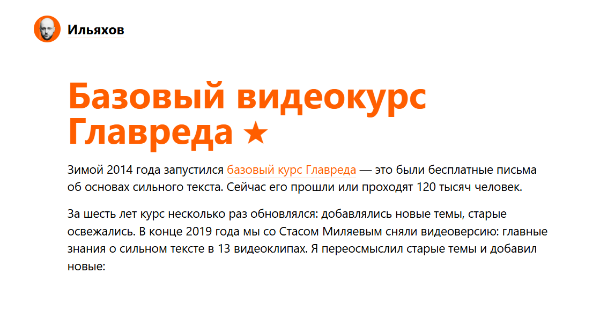
За последние шесть лет курс претерпел несколько обновлений, в том числе добавление новых тем и переработку затухающих. В конце 2019 года в сотрудничестве с Станиславом Миляевым была создана видеоверсия: ключевые аспекты формирования качественного текста изложены в 13 видео. Мы переосмыслили предыдущие учебные материалы и включили новые знания:
- Способы работы с Главредом
- Анализ информационного стиля
- Опасные слова
- Структурные вводные фразы
- Оценочные слова и усилители воздействия
- Штампы в тексте
- Абстракция
- Словесная структура
- Канцелярские обороты
- Кинематографические методы
- Уточняющие фразы
- Однородные члены предложения
- Прозрачность текста
- Коммуникация
- Практическое применение текста
- Контекстуальные аспекты
- Следующие шаги в обучении
Углубленный 2-месячный курс ИНТЕРНЕТ-ПРОФЕССИЯ КОПИРАЙТЕР 2.0 от Натальи Реген
Сайт: https://infovoronka.ru/ipk2-0-price-special
Цена:
Базовый пакет — 13990 рублей
Стандартный пакет — 20990 рублей
Премиум пакет — 40990 рублей
Структура курса
Модуль 0
Подготовительный этап
В этом начале курса вы ознакомитесь с общей структурой и процессом обучения. Мы рассмотрим ключевые маркетинговые концепции, необходимые для успешной карьеры копирайтера. Узнайте о профессии и формуле «Т» для практического применения. Также получите советы по поиску первого клиента для стажировки, что станет вашим первым шагом в практике.
Модуль 1
Тексты и статьи для веб-сайтов
Вы изучите различные типы и форматы текстов. Проверите примеры статей разных стилей и выполните практические задания по созданию собственных текстов для портфолио. Освоите написание текстов для главной страницы, категорий, услуг и раздела «О компании», а также научитесь составлять текстовую структуру на практике.
Модуль 2
Продающие тексты
Вы узнаете о типах и форматах текстов, направленных на продажи. Получите рабочую тетрадь с полезными шаблонами и структурами, которые помогут сократить время на работу. Подробно разберете основные формулы, которые важны для клиентов, и выполните задание по написанию продающего текста для вашего портфолио.
Модуль 3
Социальные сети
Научитесь придумывать истории, разрабатывать контент-планы для клиентов и составлять тексты для социальных сетей. Узнайте о полном контентном цикле, цепочках для вовлечения аудитории, а также как писать рекламные и продающие посты.
Модуль 4
Рассылки, чат-боты и автоворонки
Изучите стратегии написания рассылок с практическими примерами и шаблонами. Получите алгоритм для создания пяти различных видов писем. Освойте технологии разработки автоворонок и чат-ботов с ценами, начинающимися от 15000 рублей.
Модуль 5
Упаковка и самопрезентация
Научитесь формировать бриф с деталями сотрудничества с клиентом. Узнайте, как правильно оформить портфолио и описать свои проекты. Рассмотрите варианты создания профессиональной страницы, группы или сайта для продвижения личного бренда.
Модуль 6
Поиск клиентов и получение заказов
Узнайте, где находить платежеспособных клиентов. Овладейте тремя проверенными методами для установления долгосрочных отношений с клиентами. Научитесь вести переговоры и уверенно отвечать на любые возражения. В этом модуле мы предложим лучшие платформы для поиска клиентов и готовые шаблоны обращений к заказчикам, чтобы повысить ваши шансы на успех.
Модуль 7
Выбор специализации для увеличения дохода
Определите, какая специализация вам подходит. Откройте для себя основы различных направлений копирайтинга: автоворонки, услуги, контент-маркетинг, онлайн-магазины и онлайн-обучение.
Модуль 8
Комплексные предложения для клиентов
Узнайте, как предлагать клиентам повторные услуги для увеличения дохода от одного проекта. Получите пошаговое руководство по формированию комплексного предложения. Подготовьте систему для получения заказов на суммы свыше 10000 рублей за проект.
Финал
Сдача аттестации для получения сертификата.
План личностного и профессионального роста: как развиваться в своей карьере.
Ваш индивидуальный план увеличения доходов.
Формат обучения
Уроки проходят на образовательной платформе.
Регулярные обновления.
Вебинары с ответами на ваши вопросы.
Поддержка куратора.
Удалённая профессия Копирайтер — Артур Грант и Вероника Головченко / Profi Internet
Сайт: https://copywriting.artur-grant.ru/
Продолжительность: 2 недели
Формат: онлайн
Цена: бесплатно
ЧТО ВЫ ПОЛУЧИТЕ?
Участвуйте бесплатно в двухнедельном курсе по копирайтингу. Начните зарабатывать удаленно, создавая тексты под заказ.
АВТОРЫ КУРСА
Артур Грант – соавтор курса и основатель учебной школы Profi-Internet. Копирайтер с семилетним опытом, который в первый год работы поднялся с очень низкой ценовой категории (2-3 доллара за текст) до 200-400 долларов. Тексты, созданные Артуром для его проектов, принесли более 28 миллионов рублей за последние три года.
Вероника Головченко – опытный тренер с более чем семилетним стажем в копирайтинге, подготовившая более 1000 человек на курсах и в индивидуальном коучинге.
Специалист по копирайтингу
Сайт: https://copy2.0.profiinet.ru/
Продолжительность: трехмесячный онлайн-курс
По завершении обучения вы получите сертификат.
Цена:
Пакет «СТАНДАРТ» — 9900 рублей/мес
Пакет «VIP» — 15900 рублей/мес
Чему вас научит курс?
- Вы получите сертификат, подтверждающий ваши навыки.
- Станете готовым экспертом с полным портфолио и персональным сайтом.
- Освоите все тонкости профессии и сможете принимать сложные заказы (включая продающие тексты) от 5000 рублей.
- Смело привлечете высокооплачиваемых клиентов и организуете «сарафанное радио», чтобы получать заказы самостоятельно.
- Избавитесь от сомнений и страхов, обретя уверенность в себе.
- Достигнете поставленных целей (финансовая независимость, карьерный рост, работа на новое место).
Программа курса
Модуль 01
4 недели
Мастер текстов
• Основные инструменты для копирайтинга
• Различия между LSI и SEO-копирайтингом
• Характеристики создания SEO-текстов для интернет-магазинов
• Верстка текстов
• Понятия: сниппет, хлебные крошки, метатеги
• Дизайн текста
• Создание контента для социальных сетей
• Алгоритм, который позволит быстро и с удовольствием выполнять задания.
Модуль 02
1 неделя
Поиск первых клиентов на платформах
• Как правильно выбрать платформу для копирайтинга
• Как заполнить профиль так, чтобы клиенты вас заметили
• Как написать отклик и начать зарабатывать.
Модуль 03
4 недели
Создание качественного портфолио
• Формирование мощного портфолио с нуля
• Как определить стоимость своих услуг?
• Откройте для себя свою уникальность (УТП)
• Первые клиенты вне платформ: где их найти и как установить контакт.
Модуль 04
4 недели
Мастер продающих текстов
• Разработка брифа
• Анализ целевой аудитории, конкурентов и продукта
• Эффективные формулы «дорогого» копирайтинга
• Пошаговые инструкции по написанию продающих текстов.
• Сторителлинг
• Создание эффективных лендингов
• Email-рассылки
Модуль 05
1 неделя
Поиск высокооплачиваемых клиентов
• Подготовка кейсов
• 11 методов поиска клиентов от Артура Гранта
• Активные и пассивные подходы
• Поиск в онлайн и оффлайн пространстве
• Стратегическое партнерство
Модуль 06
1 неделя
Профессиональная упаковка услуг
• Формирование «имиджа эксперта»
• Определение специализации
• Нейминг
• Создание собственного сайта
Авторы курса
Артур Грант
• Соавтор курса, копирайтер и маркетолог, основатель школы Profi-Internet.
• За год с начала карьеры поднялся с 2-3 долларов за текст до 200-400 долларов.
• Тексты Артура принесли его проектам более 140 миллионов рублей за последние 5 лет.
Вероника Головченко
• Соавтор курса, опытный тренер более 8 лет в сфере копирайтинга.
• Обучила свыше 1200 человек, ставших успешными копирайтерами.
• Создала контента на сумму более 7 миллионов рублей.
Кому рекомендуется курс?
Новичкам:
Овладейте одним из самых актуальных навыков 2019-2020 года. Работайте из любого места с гибким графиком и стабильно высоким доходом.
Начинающим копирайтерам:
Станьте известными профессионалами в своей области, увеличивайте доходы и создавайте поток заказов.
Специалистам по SMM, SEO, дизайнерам и маркетологам:
Предлагайте своим клиентам разнообразные пакеты услуг, расширяйте свои возможности и повышайте стоимость своих предложений.
Для текущих и потенциальных бизнесменов:
Сэкономьте ресурсы, обойдя стороной недобросовестных подрядчиков и выбрав надёжных экспертов.
Школа копирайтинга — Мария Солодар
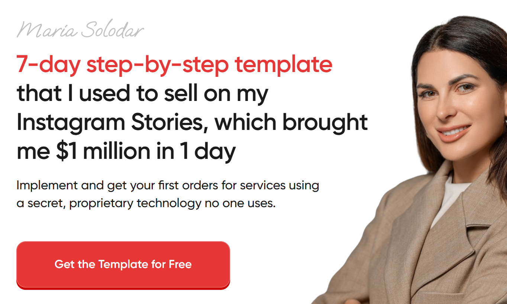
Сайт: https://solodar.com/copywriting-school/
Длительность программы обучения составляет 2 месяца.
По окончании курса вы получите сертификат.
Цена участия — 59 900 РУБ.
Кому будет интересно это обучение?
Тем, кто хочется найти новую работу:
Если ваша цель — зарабатывать более 100 000 рублей, работая из любого уголка мира, и вы хотите добиться финансовой свободы.
Предпринимателям:
Если вы хотите развивать новые прибыльные направления своего бизнеса.
Маркетологам:
Если вам необходимо расширить свои услуги и воздействовать на покупателей через текст.
Тем, кто только начинает:
Если вы никогда не создавали тексты, но желаете получать доход от контента.
Что вы изучите?
Вы научитесь подготовке эффективных писем, созданию лендингов, маркетинговых материалов и других текстовых форматов с лёгкостью. Вы будете писать для социальных сетей, активно развивая свой блог и увеличивая объемы продаж путем расширения аудитории. Овладев мастерством написания текстов, вы сможете создать тексты, которые побуждают к немедленному приобретению товара. Кроме того:
Вы освоите методы повышения финансовых показателей своего проекта, полагаясь на качественные тексты. Вы познакомитесь с психологическими приемами, которые помогут убедить даже самых скептически настроенных клиентов. Также вы научитесь налаживать долгосрочные отношения с клиентами, что позволит вам стабильно зарабатывать от 100 000 рублей ежемесячно.
Содержание курса
**МОДУЛЬ 1**
Введение: основы профессии и организационные моменты.
Договор-оферта.
Кто такой копирайтер? Знания о профессии и подготовка к её особенностям.
Как пользоваться личным кабинетом и сдавать домашние задания.
Работа с брифом — ключевой этап в написании успешного текста.
Дополнительные материалы:
Шаблон брифа для копирайтера.
Результаты модуля:
Вы узнали основные термины и концепции копирайтинга.
Определили проект для стажировки.
Освоили использование обучающей платформы.
Научились работать с брифом.
**МОДУЛЬ 2**
Психология копирайтинга.
Основы написания качественных текстов.
Как научиться влиять на читателя: ключевые триггеры для копирайтера.
Сторителлинг: создание захватывающих историй.
Дополнительные материалы:
Психология влияния в продажах и бизнесе.
30 необходимых ментальных триггеров с примерами.
Инструкция по созданию профиля целевой аудитории.
Инструкция по составлению аватара.
Примеры проблем целевой аудитории.
Результаты модуля:
Вы освоили основные принципы копирайтинга.
Научились эффективно использовать триггеры.
Создали профиль целевой аудитории и аватара.
Написали продающую историю для своего проекта.
**МОДУЛЬ 3**
Создание содержательных текстов и разработка сильного предложения.
Уникальное торговое предложение (УТП) и эффективный оффер.
Как привлечь внимание с помощью заголовка.
Дополнительные материалы:
УТП на основе заявленных ценностей.
Офферы и их примеры.
Формула специального предложения.
Примеры офферов по уникальной методике.
Результаты модуля:
Сформируете декларацию ценностей для своего проекта.
Создадите убедительный оффер, следуя формуле.
Разработаете рекламные заголовки.
**МОДУЛЬ 4**
Проектирование лендингов и создание коммерческого предложения.
Как создавать посадочные страницы с высокой степенью конверсии.
Коммерческое предложение и маркетинговый пакет.
Дополнительные материалы:
Обзор платформы Mottor.
Пример разработки лендинга на Tilda.
Элементы лендинга: оффер, дескриптор, призыв к действию.
Инструкция по созданию посадочной страницы.
Шаблон для проектирования подписной страницы.
Пример прототипа для продающей страницы в Google Docs.
Коммерческое предложение и маркетинговый пакет.
Схема «21 вопрос для упаковки» по методике Лебедева.
21 вопрос для упаковки.
117 вопросов для упаковки.
Результаты модуля:
Научитесь с нуля проектировать страницу в конструкторе.
Создадите коммерческое предложение для своего проекта.
Научитесь разрабатывать презентацию для коммерческого предложения.
Представите свой маркетинговый пакет как копирайтер.
**МОДУЛЬ 5**
Основы email-маркетинга и написание электронных писем.
Как создать рассылку, которая будет открываться.
Email-маркетинг как многофункциональный инструмент продвижения.
Правила написания продающих писем.
Создание увлекательного и продающего контента для соцсетей.
Технические аспекты настройки авторассылки через GetResponse.
Дополнительные материалы:
Мастер-класс «Цепочка взаимодействий».
Инструкция по написанию писем для почтовых стратегий.
Инструкция по созданию воронки продаж.
Примеры стратегий email-маркетинга.
Видеоинструкция по работе с программой Xmind.
Чек-лист по написанию и оформлению писем.
Чек-лист по созданию и оптимизации серии писем.
Примеры электронных писем.
Эффективный email-маркетинг (занятие от GetResponse).
Результаты модуля:
Научитесь создавать письма с высоким показателем открываемости.
Разработаете email-стратегию для своего проекта.
Напишете серию писем, включая продающие.
**МОДУЛЬ 6**
Копирайтинг для соцсетей и мессенджеров.
Создание контента для Instagram: оформление профиля, контентные и рекламные посты.
Как оформить страницы и привлечь внимание в Facebook.
Создание увлекательного и привлекательного контента для социальных медиа.
Копирайтинг для мессенджеров.
БОНУС: Психология продаж в социальных сетях.
Дополнительные материалы:
Гид «Принципы написания постов».
Пример оформления профиля.
Плюсы и минусы Facebook.
Примеры вовлекающих и стимулирующих постов.
5 распространенных ошибок при написании постов.
Сторителлинг.
Структура удачной истории.
Инструкция по созданию историй.
Примеры историй.
7 критериев для рассылок в мессенджерах.
Результаты модуля:
Оформите свои страницы в Instagram и Facebook.
Поймете, какие страницы считаются успешными в соцсетях и почему.
Создадите ряд интересных постов.
Научитесь различиям в контенте для мессенджеров.
Используете различные форматы контента в мессенджерах.
Составите сообщение для мессенджера.
**МОДУЛЬ 7**
Копирайтинг для видео.
Создание продающего видеоконтента.
Разработка сценария «Запуска по Волкеру».
Дополнительные материалы:
Пример сценария для продающего видео.
Пример продающего видео для курса по эротическим танцам.
Скрипт для One Time Offer (OТO).
Скрипт для создания продающего видео.
Пример ОТО.
Как подготовить презентацию для продающего вебинара или выступления.
Шаблон продающей презентации на Google-презентациях.
Результаты модуля:
Создадите сценарий продающего видео для вашего продукта.
Научитесь проводить успешные запуски и разработаете сценарий для видео.
Сформируете структуру презентации для вашего проекта.
**МОДУЛЬ 8**
Финальный проект.
Завершение курса и получение сертификата.
Ваш БОНУС за обратную связь о Школе копирайтеров.
Результаты модуля:
У вас будет реальный кейс с готовыми шаблонами и стратегиями для составления любых текстов.
После успешной защиты финального проекта получите сертификат.
**БОНУСНЫЙ БЛОК**
Где и как находить клиентов, что необходимо новичку и как повысить ценность своих услуг.
Какова стоимость услуг копирайтера: какие расценки озвучивать клиентам?
Как успешно удалённо устроиться в желаемую компанию: от составления резюме до онлайн-собеседований.
Как уплачивать налоги, если вы работаете на себя или как фрилансер.
Лекторы
Мария Солодар
Эксперт в области цифровых технологий, онлайн-продюсер и предприниматель.
Олег Баша
Генеральный директор GetResponse Россия, профессионал в сфере email-маркетинга.
Информационный стиль и редактура текста от Бюро Горбунова
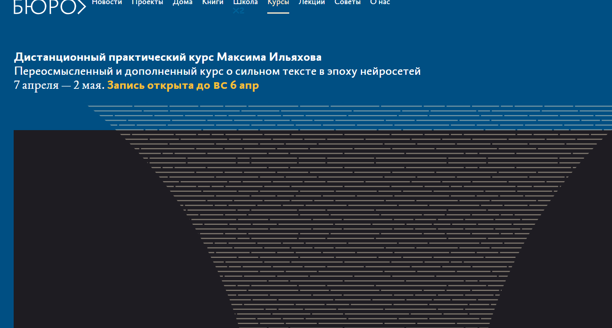
Структура курса
**Первый день: слова**
Стиль написания и его содержание.
Принципы редактирования текстов.
Использование стоп-слов.
Практическое задание: выявление стоп-слов.
Достоверность текста и выбор фактов.
Практическое задание: работа с фактами.
Ошибка писателей разных уровней.
Практическое задание: повышение информативности через редактирование.
**Второй день: предложение, абзац и текст**
Структура и ёмкость предложений.
Энергетика синтаксиса.
Знаки препинания.
Практическое задание: редактирование предложений.
Логичность построения абзацев и правило капрала.
Практическое задание: редактирование абзацев.
Заголовки и подзаголовки.
Структурирование мыслей.
Практическое задание: создание основного каркаса статьи.
Ритм написания и методы дидактики.
Практическое задание: написание статьи.
**Третий день: информационный продукт**
Анализ успешного текста и его структура.
Честность и манипуляция.
Настройка под читательскую аудиторию.
Иллюстрации и их влияние на текст.
Практическое задание: выбор иллюстративного материала.
Улучшение базовых предложений.
Стиль общения.
Практические задания: открытое сообщение
Принципы акцентирования и управления вниманием
Практическое задание: параллельное изложение
Структура информационной статьи
Практическое задание: подготовка статьи к публикации
Четвертый день: рекламная деятельность
Принцип полезности
Реклама, которую хочется распространять
Создание заголовка для рекламного материала
Структура страницы продажи
Эмоции и личные воспринимаемые ощущения в рекламе
Этические и неэтические методы
Способы работы с возражениями
Отзывы и составление текстов
Сравнение длинных и коротких страниц
Как написать текст для страницы товара в интернет-магазине
Полезно для людей — полезно и для поисковых систем
Практическое задание: создание длинной страницы
Итоговый алгоритм написания текста
Небольшие секреты редакторской работы
Инструменты редактирования и политика редактирования
Польза и вред текста. Когда стоит отказаться от его написания
Автор и преподаватель курса
Максим Ильяхов
Главный редактор бюро с 2009 года, автор рекомендаций по созданию и редактированию текстов, разработчик онлайн-сервиса «Главред», кандидат педагогических наук.
«Инициал» от Lifehacker.Ru
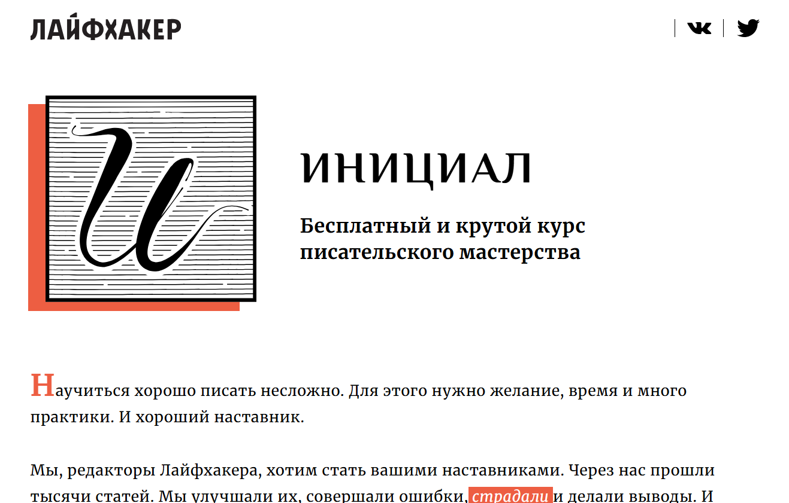
Сайт: https://lifehacker.ru/special/initial/
Стоимость: бесплатно
Научиться писать качественные тексты оказывается не так сложно, как может показаться на первый взгляд. Вам нужно лишь желание, свободное время, обилие практики и хороший наставник.
Мы, команда редакторов Лайфхакера, стремимся стать такими наставниками для вас. На протяжении работы над множеством статей мы постоянно улучшали текст, делали ошибки, учились и извлекали ценные уроки. Теперь мы готовы делиться нашим опытом через рассылки.
Курс включает в себя 12 писем, которые будут приходить на вашу электронную почту каждую неделю. Каждое письмо будет содержать теоретический материал и множество примеров.
Вы узнаете:
– как находить интересные темы;
Школа копирайтинга — Ольга Соломатина
Продолжительность: 2 месяца
Стоимость: 24900 р.
Вы получите диплом установленного образца
Обучение в онлайн-школе позволяет освоить одну из самых востребованных профессий, открывая возможности для заработка из любой точки мира, даже находясь дома с детьми.
Программа курса в Школе копирайтинга охватывает три ключевых вопроса:
- Навыки взаимодействия с клиентами.
- Теоретические основы копирайтинга и маркетинга, практические навыки.
- Умение эффективно позиционировать себя и находить высокооплачиваемые вакансии.
Курс
- Эффективное взаимодействие с клиентами.
На этом этапе вы получите реальные задания и возможность зарабатывать. Практика — лучший способ получения знаний.
Мы обсудим, где и как копирайтеру найти потенциальных работодателей.
Научитесь составлять задания на текст, как работая с клиентом, так и самостоятельно.
Узнайте, какие вопросы помогут выявить истинные потребности заказчика.
Познакомьтесь с процессом согласования текстов и обнаружения подходящих клиентов, а также контрактами, от которых стоит держаться в стороне.
Освойте стратегии разрешения конфликтов и предотвращения их возникновения с клиентами.
Разберем, что на самом деле стоит за фразой: «Мне это не нравится».
Научитесь обсуждать правки и комментарии.
Также важно знать, как реагировать в ситуациях с задержкой сроков со стороны клиента. - Основы копирайтинга и маркетинга.
В процессе обучения вы будете часто писать и редактировать свои тексты, так как это ключ к развитию ваших навыков написания. После каждого задания я буду проводить редактуру и объяснять, почему вношу те или иные изменения.
Вы изучите, как копирайтеры находят информацию и какие методы для этого используют.
Освоите более 20 типов планов материалов и научитесь применять их на практике.
Научитесь писать в различных стилях: информационном, деловом, научном и других.
Раскройте различные жанры — от постов и заметок до аналитических отчетов и эссе.
Овладеете всеми 12 типами пресс-релизов.
Научитесь редактировать как свои, так и чужие тексты.
Узнайте о канцеляризмах и штампах, когда их использование оправдано.
Специалисты по орфографии и пунктуации из Издательского дома «КоммерсантЪ» проведут для вас мини-лекции.
Разберем отличия между копирайтингом и журналистикой.
Научитесь проводить интервью, подготовив хороший список вопросов, и освоите основы стилистики.
Маркетолог расскажет о рекламе, воронках продаж и уникальных торговых предложениях, а я дополню эти знания по созданию продающих текстов и нативной рекламе.
Вы научитесь писать для компаний, создавать учебные материалы и рецензии.
Изучим методики работы с возражениями клиентов.
Вы освоите оформление текстов и страниц.
Расмотрим основы сторителлинга и правильное написание для различных социальных платформ.
Вы научитесь создавать эффективные заголовки и подзаголовки.
Научитесь определять, когда лучше использовать графические материалы вместо текстовых. - Позиционирование себя и поиск высокооплачиваемой работы.
Разберем суть редакционных политик.
Научитесь собирать портфолио и эффективно представлять свои услуги.
Вы научитесь накапливать отзывы и рекомендации, а также редактировать тексты других людей, сохраняя при этом хорошие отношения.
Смиритесь с перфекционизмом и внутренним критиком.
Узнайте, сколько вы стоите на рынке и что на самом деле предлагает копирайтер своим клиентам.
Поймете, как справляться со страхами, связанными с увеличением цен, и как при необходимости отказывать клиентам.
Научитесь писать без длительных перерывов и применять методы предотвращения эмоционального выгорания.
Оцените, что такое дедлайн и почему важно уметь работать под давлением.
Получите представление о различных способах заработка в этой сфере.
Копирайтинг за 2 месяца — Мария Налобина
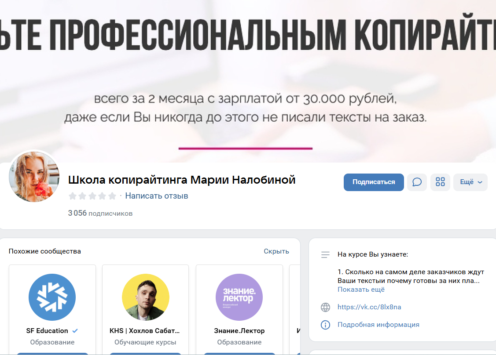
На курсе вы получите ценные знания:
- Что именно и почему заказчики ожидают от ваших текстов и за что готовы платить.
- Способы написания качественных текстов согласно готовым инструкциям и методы их коммерциализации.
- Этапы, позволяющие заработать ваши первые деньги в интернете.
Не упустите ценную возможность! Курс отлично подойдет тем, кто стремится стать высокооплачиваемым копирайтером, но не знаком с нюансами профессии, а также тем, кто столкнулся с «стеной» и ищет пути для роста!
Вы узнаете об особенностях этой востребованной сферы и познакомитесь с моими авторскими методиками!
Спикер:
Мария Налобина — предприниматель, активно развивающая свой бизнес в интернете последние 5 лет, создавая тексты, которые приносят более 10 миллионов рублей.
Она также расскажет о самых прибыльных текстовых форматах и о том, как без особых усилий зарабатывать от 50 тыс. рублей в месяц, выполняя 2-3 качественных заказа.
Такого вы еще не слышали! Это результаты нашего опыта.
Вы узнаете, где кроется секрет финансового успеха в копирайтинге и как его достичь.
Профессия Копирайтер — Дамир Халилов
Сайт: https://damir-halilov.ru/kurs_copywrite/
Продолжительность: 2 месяца
Формат: видеоуроки
Стоимость:
SILVER – 24 700 руб.
GOLD – 28 700 руб.
PLATINUM – 44 700 руб.
Рассрочка: от 2059 рублей в месяц
Кому это будет полезно
Предпринимателям
Вы научитесь создавать эффективные рекламные тексты для своего бизнеса, разрабатывать прототипы сайтов, а также готовить презентации и коммерческие предложения, что позволит увеличить доход вашей компании.
Маркетологам и SMM-специалистам
Вы освоите методы создания качественного контента для социальных сетей, email-рассылок и других маркетинговых каналов, что поможет вам выстроить контент-стратегию для вашего бизнеса.
Копирайтерам
Вы укрепите свою профессиональную репутацию, развив личный бренд, что увеличит поп спрос и стоимость ваших услуг.
Тем, кто стремится освоить актуальную профессию
Вы обретете интересную профессию и возможность работать откуда угодно.
Что вы узнаете
Создадите сильные тексты
Научитесь разрабатывать материалы на различные темы в разных форматах для различных задач.
Поймете потребности вашей аудитории
Сможете создавать контент, максимально привлекательный для ваших читателей и клиентов.
Научитесь генерировать идеи
Овладейте техниками креативного мышления, что поможет вам легко генерировать успешные идеи и концепции.
Научитесь вносить вклад в развитие бизнеса
Познайте, как при помощи текста установить доверие к своему бренду и привлечь новую аудиторию.
Узнайте, как продвигать свои услуги
Найдите пути для поиска клиентов и научитесь формулировать выгодные предложения.
Учебный процесс
Вы будете изучать материалы курса и усваивать полученные знания через практические задания. Для успешного завершения курса будет достаточно всего 3-5 часов в неделю.
- Трехразовые видеоуроки в неделю.
- Анализ домашних заданий с рекомендациями от кураторов.
- Чат для обмена мнениями с кураторами и другими участниками курса.
- Четыре интерактивные сессии с Дамиром — мы будем анализировать работы студентов в реальном времени.
- Шаблоны и чек-листы, плюс доступ к библиотеке видеоматериалов.
- В финале курса — разработка сайта-визитки и создание портфолио.
- Вы получите сертификат от Школы и диплом государственного образца.
- После завершения учебы вам будет доступен секретный канал с вакансиями для выпускников.
Структура курса
- Основы копирайтинга
- Методы копирайтинга
- Бизнес-сторителлинг
- Создание контента для социальных медиа
- Тексты для веб-сайтов
- Разработка материалов для email-рассылок
- Содержимое для презентаций, рекламных брошюр и буклетов
- Статьи и публикации в СМИ
- Поиск клиентов и варианты монетизации
- Расширенный курс и VIP-секция
- Упаковка текста
- Продвижение на платформе Яндекс.Дзен
- Формирование личного бренда и разработка копирайтингового агентства
Преподаватель курса
Дамир Халилов
Основатель GreenPR — первого SMM-агентства в России.
Автор бестселлера «Маркетинг в социальных сетях», получившего Книжную премию Рунета 2014 года в категории «Выбор читателей».
Регулярный спикер на мероприятиях, таких как РИФ, RIW, «Российская неделя маркетинга», Российская неделя продаж, Суровый Питерский SMM, СПИК.
Тексты на 360 — Ксения Лебедева
Сайт: https://upgrademarket.ru/textspro
Стоимость обучения: информация не предоставлена.
Кому полезен этот курс?
Тем, кто стремится к творческой деятельности
Для людей, которые хотят, чтобы работа приносила не только деньги, но и радость.
Для начинающих копирайтеров
Для тех, кто хочет быстро перейти от низкооплачиваемых заказов по 100 рублей за 1000 знаков к более выгодным предложением.
Фрилансерам и удаленным работникам
Чтобы освоить новый навык и существенно повысить расценки на свои услуги.
Темы курса
1
Базовый курс
- Основы текстового творчества
- Ваши сильные стороны как автора
- Классификация текстов
- Типичные ошибки копирайтеров
- Рекомендуемая литература для авторов
Результат: вы освоите язык копирайтинга, выработаете стратегии и создадите конкретный план действий.
2
Журналистика
- Основные принципы написания текстов
- Источники информации
- Разнообразные форматы текстов
- Правила создания статей
- Особенности контента для корпоративных блогов, интервью и дайджестов
- Как сформулировать привлекательный заголовок
- Рекомендации успешных авторов
- Поиск работы:
- Создание сопроводительного письма
- Как объяснить недостаток опыта
- Составление резюме
- Где искать вакансии
Результат: вы погрузитесь глубже в журналистику и научитесь писать для массовых медиа.
3
Продающие тексты
- Специфика продающего копирайтинга
- Структуры текстов, ориентированных на продажи
- Определение и решение клиентских проблем
- Эмоциональные триггеры
- Как предложить помощь, а не навязывать продукт
- Контент для информационных бизнесов
- Создание эффективных продающих писем
Результат: вы научитесь избегать навязчивых продаж и начнете учитывать потребности клиента.
4
Тексты для блога
- Ключевые моменты блочных текстов
- Эффективное планирование контента
- Методы привлечения аудитории
- Как справляться с хайпом, даже если вы новичок
- Кликбейт: когда и как его использовать
- Сторителлинг для удержания аудитории
- Создание материалов, способствующих продаваемости
Результат: вы вооружитесь всеми необходимыми инструментами для ведения личного блога или работы с чужими проектами.
5
Заработок
- Методы монетизации ваших умений
- Фриланс: как начать и развиваться
- Поиск клиентов: платформы для фриланса
- Шаблон заявки на бирже
- Бриф для клиентов
- Способы увеличения расценок
- Оптимизация бизнес-процессов и делегирование задач
Результат: выстроите систему заработка на ваших знаниях и освоите методы повышения расценок.
6
SEO-тексты
- Основы SEO-копирайтинга
- Как поисковые системы анализируют и воспринимают текст
- Разница между копирайтом и рерайтом
- Смысловая структура сайта
- Понимание технического задания
- Структура сниппета (внешние заголовки страниц)
Результат: вы обучитесь, как продвигать сайты с помощью текстов и эффективно взаимодействовать с SEO-специалистами.
7
Психология денежного успеха
- Обоснованный подход к целеполаганию
- Психологические барьеры на пути к финансовому успеху
- Способы преодоления страха перед деньгами
Результат: вы преодолеете внутренние ограничения, мешающие вам достичь финансового благополучия.
Преподаватели курса
Ксюша Лебедева
Специалист по написанию продающих текстов для сайтов, а также ведению коммерческих и личных аккаунтов. Работала в журналистике в сферах fashion и travel, зарабатывая более 100 тысяч рублей в месяц, и знает, как продать один пост за 3 500 рублей.
Маргарита Взнуздаева
Автор статей для VC.ru, Habr, Diletant Media и проектов «Своё дело» от Сбербанка, Пятницы и «Райффайзенбанк Медиа», а также Digger. Обладает глубокими знаниями о том, как пробиться в СМИ и зарабатывать на текстах без собственного блога.
Школа копирайтинга — The Words
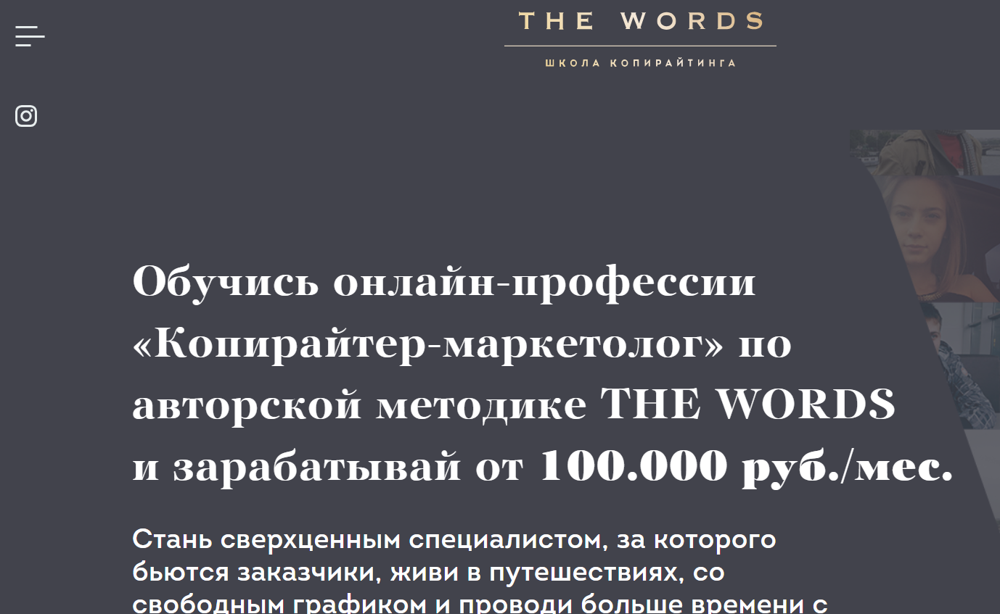
Сайт: https://the-words.ru/
Стоимость обучения: от 13500 до 150000 рублей.
Для кого предназначено это обучение?
Работающие люди, стремящиеся к новым возможностям
Для тех, кто планирует сменить место работы, увеличить доходы, достичь независимости, путешествовать, регулировать свой график, проводить больше времени с родными и избегать пробок.
Копирайтеры
Тем, кто хочет значительно повысить свои ставки и получать хорошо оплачиваемые заказы, стать востребованным специалистом, к которому клиенты будут стремиться, и ожидать начала проектов в течение полутора месяцев.
Предприниматели
Для тех, кто понимает, что в эпоху цифровой экономики текст — ключевой инструмент для донесения ценности предложения до клиентов. Для тех, кто стремится снизить затраты на качественный маркетинг и хочет, чтобы сайт привлекал больше посетителей, а посты в социальных сетях и продающие письма обеспечивали высокий отклик.
Маркетологи
Тем, кто желает развить навыки в копирайтинге, чтобы существенно повысить свою ценность для компании, увеличить доход и завоевать уважение коллег.
Фрилансеры
Для тех, кто намеревается нарастить объем заказов и увеличить стоимость услуг посредством качественного позиционирования.
Матери в декрете
Для тех, кто хочет обеспечить стабильный доход, работая из дома, радуя ребенка и при этом удовлетворяя свои собственные потребности.
Кураторы
Анастасия Кузьмина
Наталья Ягфарова
Диплом
По завершении всех заданий выпускникам курса выдается электронный диплом, который можно разместить на личном сайте и в социальных сетях, а также использовать как приложение к резюме при поиске работы.
«Удалённая профессия копирайтер» от Profi Internet
Сайт: https://profiinet.com/course/kopirajting-besplatnyj-kurs
Стоимость: Бесплатно
Что вы узнаете на протяжении курса
- Поймете, кто такой копирайтер и как он способствует успеху онлайн-бизнеса
- Создадите свой первый текст, за который получите справедливое вознаграждение
- Узнаете, как находить первых клиентов
- Составите индивидуальный финансовый план для достижения желаемого дохода в этой сфере
Кому подойдет это обучение
Тем, кто мечтает освоить востребованную онлайн-профессию (студенты, домохозяйки, специалисты, менеджеры, пенсионеры).
Для тех, кто планирует работать удаленно, выделяя 2-3 часа в день на учебу.
Тем, кто хочет стать не просто свободным работником, но и высокооплачиваемым экспертом.
Кто будет вести занятия
Вероника Головченко
Курс будет проводить совместно с другими инструкторами, а также Вероника — профессиональный тренер с опытом более 8 лет в области копирайтинга.
Она обучила более 1200 студентов, многие из которых успешно трудятся в данной сфере.
Общий доход, полученный от создания текстов, превышает 7 000 000 рублей.
Артур Грант
Совладелец онлайн-школы Profi Internet и интернет-маркетолог с опытом работы 9 лет.
Он создал стратегию продаж, которая принесла клиентам 140 миллионов рублей за пять лет.
«Профессия копирайтер-маркетолог» от GetProff
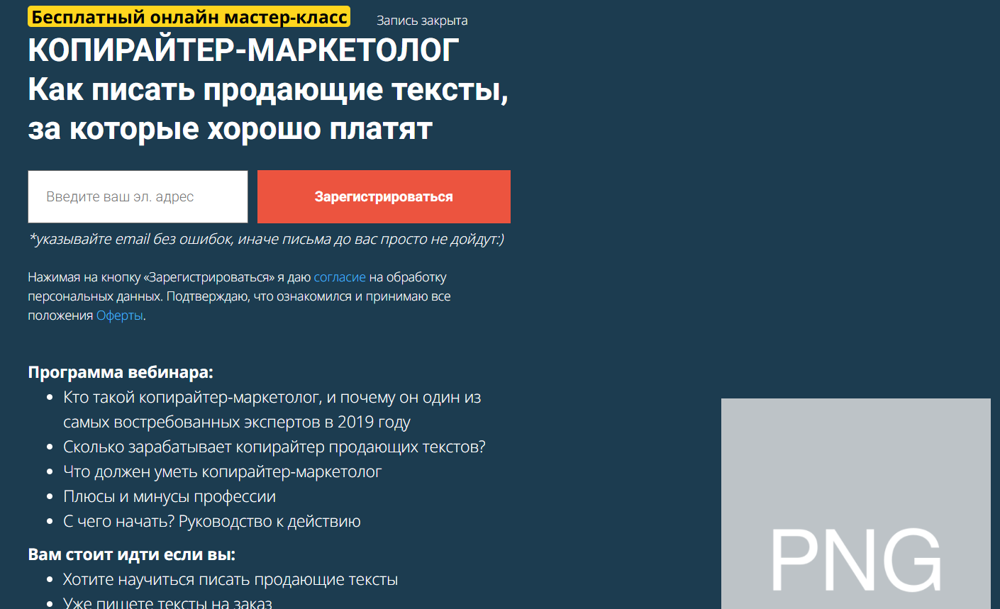
Сайт: https://getproff.ru/web/professiya-kopirayter/fb
Цена: бесплатно
Копирайтер-маркетолог
Вы научитесь создавать тексты, которые приводят к высоким доходам.
Программа вебинара:
- Важность профессии копирайтера-маркетолога и её высокий спрос с 2019 года
- Средний уровень заработка специалистов, занимающихся написанием рекламных текстов
- Основные навыки успешного копирайтера-маркетолога
- Плюсы и минусы работы в данной области
- С чего стартовать карьеру? Пошаговое руководство
Данное участие будет полезно, если вы:
- Желаете овладеть искусством написания продающих текстов
- Уже пишете тексты на заказ
- Хотите создать контент для собственного бизнеса
«АВТОРиТЕКСТ» от Ларисы Парфентьевой
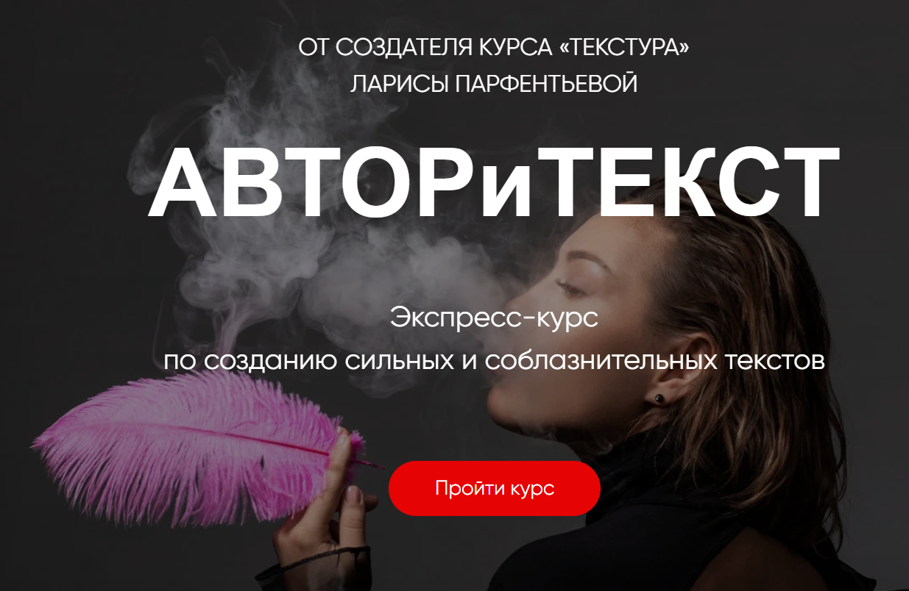
Сайт: https://www.textura.pro/avtoritext
Цена: бесплатно
Что вы узнаете
- 7 ключевых принципов создания уникальных текстов
- Как писать запоминающиеся истории
- 6 правил написания привлекательных narrativов
- Основные аспекты редактирования и организации текста
- Способы написания качественных автобиографий
- Как передать эмоции в текстах
- Техники взаимодействия с аудиторией и привлечения подписчиков
- Упражнения для развития креативности
- Способы преодоления внутренних барьеров и страхов
- 11 онлайн-ресурсов для работы с текстами
- Книги, которые стоит прочитать: «13 книг для писателей, журналистов и копирайтеров»
- БОНУС: вдохновение от успешного автора и блогера
Для кого предназначен этот курс?
Блогеры
Для желающих вести собственный блог и делиться своими историями.
Копирайтеры и журналисты
Для тех, кто уже работает с текстами или хочет зарабатывать на этом.
Специалисты по SMM
Для людей, занимающихся контентом корпоративных блогов или продвижением услуг.
Творцы
Для тех, кто желает раскрыть свой креативный потенциал.
Автор курса
Лариса Парфентьева
Автор бестселлеров из издательства МИФ, таких как «100 способов изменить жизнь» и «33+. Алфавит жизненных историй».
Журналист с опытом работы 19 лет (более 2000 статей) и успешный интервьюер (более 300 интервью).
Эксперт и автор колонок для различных медиа, включая Первый канал, Cosmo, Коммерсант FM, Forbes, Сноб, РБК, Elle и другие.
«Бесплатный курс для копирайтеров» от Kadrof.ru
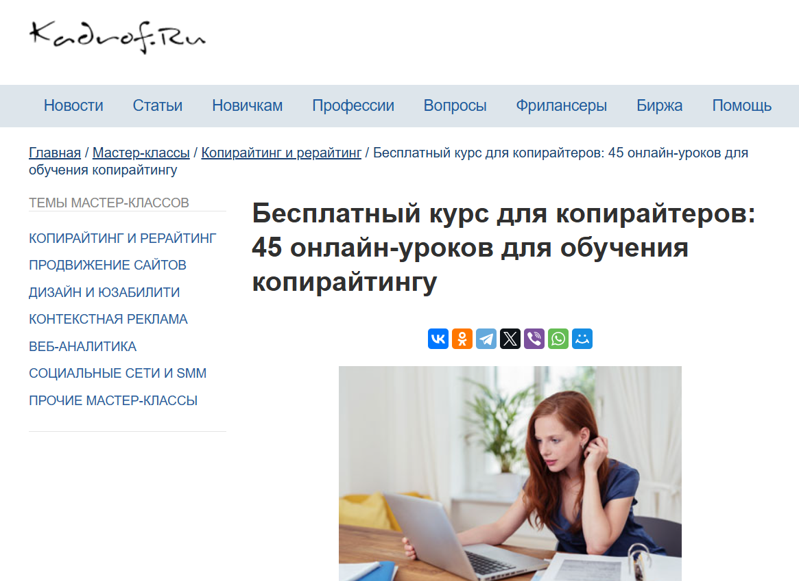
В рамках этой программы вы научитесь писать веб-тексты, оптимизировать их для поисковых систем и зарабатывать на этом. Курс ориентирован на новичков — независимо от того, есть ли у вас опыт, вы легко сможете усвоить материал, состоящий из шести модулей. Рекомендуется проходить уроки последовательно. Оставляйте свои вопросы в комментариях, и мы постараемся на них ответить. Чтобы обучение копирайтингу прошло успешно, начните писать свои тексты сразу после первых уроков, например, для блога, который можно создать на Яндекс.Дзен.
Тематика курса
- Основы копирайтинга и рерайтинга
- Методы написания текстов для различных жанров
Основы SEO-оптимизации
Методы заработка для копирайтеров
Где искать работу и получать заказы?
Обзор востребованных платформ
Онлайн-курс с практическими заданиями
Часть 1. Введение в копирайтинг и рерайтинг
Первый раздел курса включает 16 бесплатных уроков, которые помогут вам познакомиться с основами копирайтинга и рерайтинга. Вы научитесь правильно формулировать свои мысли в текстах, узнаете о расценках на эту работу и получите первоначальные знания о профессии. Если у вас возникнут вопросы или непонятные термины, оставляйте их в комментариях под уроками.
Что такое копирайтинг и SEO-копирайтинг?
Какой доход можно получить от копирайтинга?
Как развить навыки написания текстов? Путеводитель для новичков
Что такое рекламный текст? Его структуры, особенности и разновидности
Как корректно находить информацию для статей?
Как построить структуру текста?
Как создать заголовок статьи?
Как составить захватывающий лид статьи?
Как проводить рерайтинг? Пошаговая инструкция
Стилистические ошибки: разновидности и примеры
Как написать качественный текст? Алгоритм для тех, кто пишет
Четыре основные проблемы начинающих копирайтеров
Распространенные ошибки копирайтеров
7 простых приемов, чтобы ускорить свою работу
Как отличить настоящее тестовое задание от мошенничества?
Как защитить свои тексты?
Часть 2. Как создавать тексты разных стилей?
Жанр — это определенный тип текста, обладающий своими целями, структурой и характеристиками. В этом разделе курса вы научитесь создавать тексты в различных жанрах. Эффективность обучения возрастет, если после каждого урока вы будете практиковаться в написании текстов на разнообразные темы в рамках заданного жанра.
Как составить статью для сайта, блога или SEO-статью?
Как написать текст о компании?
Как писать новости?
Как создавать посты для социальных сетей?
Как оформить пресс-релиз?
Как составить описание для товара?
Как сформировать коммерческое предложение?
Как писать тексты для веб-сайтов?
Часть 3. SEO-оптимизация текстов
Для владельцев сайтов очень важно, чтобы размещенные на них материалы были доступны пользователям, которые ищут необходимую информацию. Для этого требуется правильно внедрять в тексты поисковые запросы (фразы от клиентов). Четыре урока ниже помогут вам освоить ключевые аспекты этой работы.
Как корректно оптимизировать текст под SEO?
Что такое Title, мета-теги, заголовок H1 и как их правильно оформить?
Как оценить качество текста? Контрольный список для SEO-копирайтера
Как увеличить уникальность текста?
Часть 4. Способы заработка для копирайтеров
В рамках нашего бесплатного курса вы изучили основы написания текстов для сайтов. Теперь важно понять, как использовать эти навыки для заработка в интернете. Уроки внизу раскроют основные методы получения дохода в копирайтинге.
Как новичку заработать на рерайтинге?
Как заработать на статьях в интернете?
Как заработать на поэзии и поздравлениях?
Как стать копирайтером без опыта и портфолио?
Как находить дорогие заказы на платформах для копирайтеров?
Часть 5. Где искать вакансии и заказы для новичков
В этом разделе бесплатного курса для новичков представлены обзоры полезных сайтов, которые помогут находить заказы и удалённые вакансии.
Платформы для найма статей для как новичков, так и опытных копирайтеров
Сайты, где копирайтеры могут заработать
Бесплатные биржи для копирайтеров и рерайтеров
Группы ВКонтакте и Facebook для поиска работы
Заработок на Яндекс.Дзен для копирайтеров
Компании, предлагающие удаленные вакансии
Сайты для поиска работы удаленно
Часть 6. Пошаговое руководство по работе на платформах
Многие начинающие копирайтеры начинают свою работу на биржах, представляющих собой специализированные онлайн-платформы с предложениями на тексты. Мы подготовили обзоры основных сервисов, чтобы облегчить вам процесс их освоения:
Как зарабатывать на бирже копирайтинга Etxt.ru?
Как получать доход на платформе Контент Монстер?
Как зарабатывать на Text.ru?
Как получать деньги на Copylancer.ru?
Пошаговая инструкция по заработку на сервисе Кворк
Автор: Сергей Антропов
Дизайн текста и визуальное повествование от Бюро Горбунова
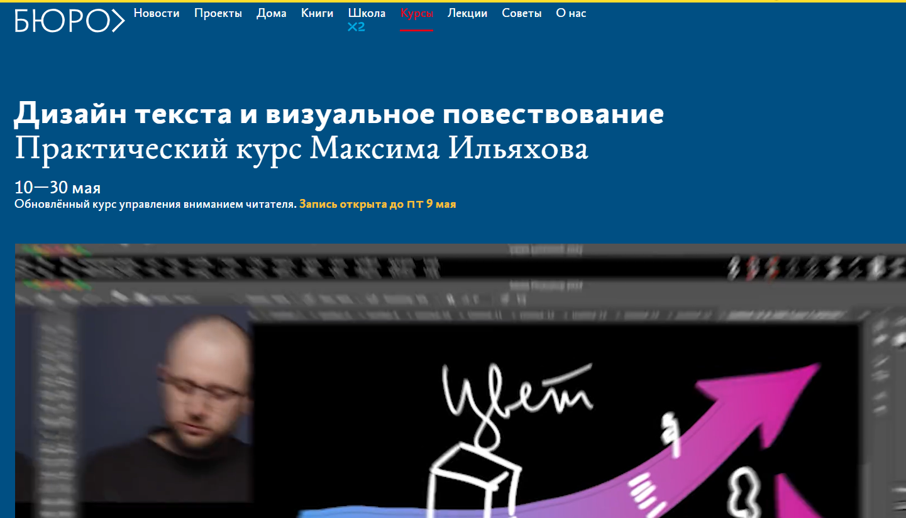
Сайт: https://bureau.ru/educenter/visual/
Стоимость: 39,000р.
Автор курса — Максим Ильяхов
Ректор школы редакторов, создатель курса «Информационный стиль и редактирование текста», соавтор книги «Пиши, сокращай» и основатель сервиса «Главред».
Структура курса
1 день: привлечение
- Инфоповоды и виды материалов.
- Как захватить внимание читателя, визуальные тенденции.
- Эмоции, вызывающие лайки и репосты.
- Триггеры для повышения интереса.
- Визуальное восприятие текста.
- Практическая работа: редактирование текста.
- Управление вниманием читателя.
- БОНУС: принципы простоты и креативности.
- Практическое задание: создание заголовков и визуала.
2 день: удержание
- Энергия чтения и способы удержания интереса читателя.
- Структура текста и заголовки.
- Иллюстрации и эмоциональный аспект.
- Практическое занятие: выбор иллюстраций для статей.
- Инфографика, помогающая объяснить сложные концепции.
- Практическое задание: преобразование схем.
3 день: побуждение к действиям
- Работа с проблемами участников.
- Энергия действий и преодоление препятствий.
- Психология читателя: как удержать его внимание.
- Пользовательские публикации и социальные доказательства.
- Практическое задание: создание системы взаимодействия с читателем.
LSI-копирайтинг: мастер контента
Сайт: https://petr-panda.ru/university/lsi-copywriting/
Цена обучения: 16,000р.
Процесс обучения
Изучайте уроки и не стесняйтесь задавать вопросы по тем моментам, которые были для вас непонятны. После каждого занятия вам предстоит пройти тестирование.
Вам нужно будет выполнять домашние задания, которые будут оцениваться экспертом П. Пандой, который также поможет вам с вашими вопросами.
В конце курса вы составите итоговый материал, выбрав его формат, тему и структуру. Исправьте все недочеты после проверки, и вы будете готовы!
Каковы результаты?
- Вы станете квалифицированным специалистом, способным создавать LSI-тексты.
- Вы получите профессиональный опыт в написании текстов.
- Вы освоите методы поиска актуальных тем для качественных публикаций.
- Курс охватывает все ключевые аспекты написания LSI-содержания.
- Разнообразные документы и чек-листы будут полезны на каждом этапе обучения.
Школа Отличного Копирайтинга [ШОК-3]
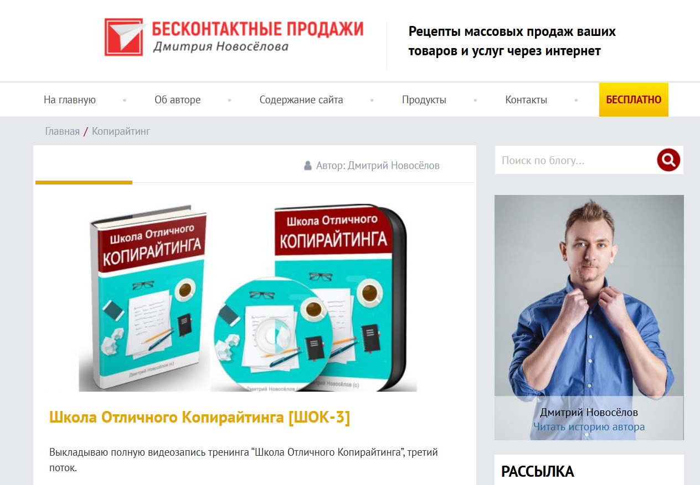
Сайт: https://novoseloff.tv/shkola-otlichnogo-kopirajtinga-shok-3/
Цена: бесплатно
Автор: Дмитрий Новосёлов
Что включает курс?
Занятие #1 – Базовые принципы современного SEO-копирайтинга
- Как выделиться среди большинства конкурентов.
- Методы получения первых доходов в процессе обучения.
- Что такое SEO-копирайтинг будущего.
- Как правильно составить статью для веб-ресурса.
- Способы подбора ключевых слов для написания и оптимизации.
- Как обрабатывать ключевые слова для достижения высоких позиций.
Занятие #2 – Заголовки и введение статей
- Как создать заголовок, которому не устоит никто.
- Шаблоны заголовков для любой тематики.
- Оптимизация заголовков под целевые запросы.
- Как заранее оценить эффективность заголовка.
- Как написать первый абзац, чтобы привлечь внимание читателя.
Занятие №3 – Создание и оптимизация статей
На этом занятии мы обсудим:
- Методы ускоренного написания длинных текстов без задержек.
- Как правильно оптимизировать текст для понимания Яндексом, избегая подозрений в чрезмерной оптимизации.
- Как оформить статью для удобства чтения.
Занятие №4 – Заработок на тизерном копирайтинге
В рамках занятия мы разберем:
- Возможности получения дохода от ваших текстов в течение недели без наличия постоянных клиентов.
- Основы функционирования Яндекс.Дзен: основные плюсы и минусы.
- Темы каналов, которые обеспечивают высокий доход и популярность.
- Примеры успешных каналов, приносящих десятки тысяч рублей, и рекомендации по их запуску.
- Три востребованных типа публикаций для Дзена.
- Чек-лист для составления привлекательных тизерных заголовков.
- Неудачные примеры тизерных заголовков и советы по их улучшению.
- 28 прилагательных для повышения привлекательности тизерного заголовка.
Занятие №5 – Вирусный копирайтинг
Мы с вами обсудим:
- Как определить «вирусный» потенциал вашего контента.
- Что такое провокационные статьи и как их писать.
- Как использовать негативные комментарии в своих интересах.
- Концепция медальных статей на примерах крупных компаний.
- Дополнительные способы увеличения «вирусности» вашего контента.
Занятие №6 – Ответы на вопросы и анализ текстов
Сайт: https://www.udemy.com/course/textobot/
Цена: бесплатно
Что вас ожидает на курсе?
- Способы быстрого создания материалов на разные тематики.
- Где находить заказы.
- Техники разработки увлекательных текстов.
- Как превратить временных клиентов в постоянные заказы.
- Дополнительные навыки и дальнейшее развитие в области копирайтинга.
Содержание курса
1. Введение. Основные принципы курса. Как работать с учебными материалами. 02:20
2. Подготовительные шаги. Условия для успешной работы. 03:34
3. Как начинать и находить заказы. 06:09
4. Метод 1. Как создавать качественные тексты. 08:40
5. Метод 2. Ускорение процесса написания контента. 06:16
6. Метод 3. Использование мобильных устройств в работе. 06:19
7. Как строить долгосрочные отношения с клиентами. 06:20
8. Развитие и освоение новых навыков.
Программа курса
Сайт: https://petr-panda.ru/university/
Сертификат по окончании — да
Цена — информация отсутствует
Кому адресован данный курс?
Курс предназначен для:
- Копирайтеров любого уровня.
- Специалистов в области SEO, SMM и веб-агентств.
- Предпринимателей и работников сферы услуг.
- Лиц, занимающихся созданием личных брендов и стремящихся повысить свое влияние.
Обучение проходит по трём направлениям:
- Копирайтинг. Необходимо знать выразительные слова, которые привлекают внимание и мотивируют к чтению.
- Психология. Умение понять читателя и предвидеть его реакции — важные аспекты этой профессии.
- Маркетинг. Владение различными техниками убеждения, управления и продаж — обязательное требование.
Формат: Онлайн
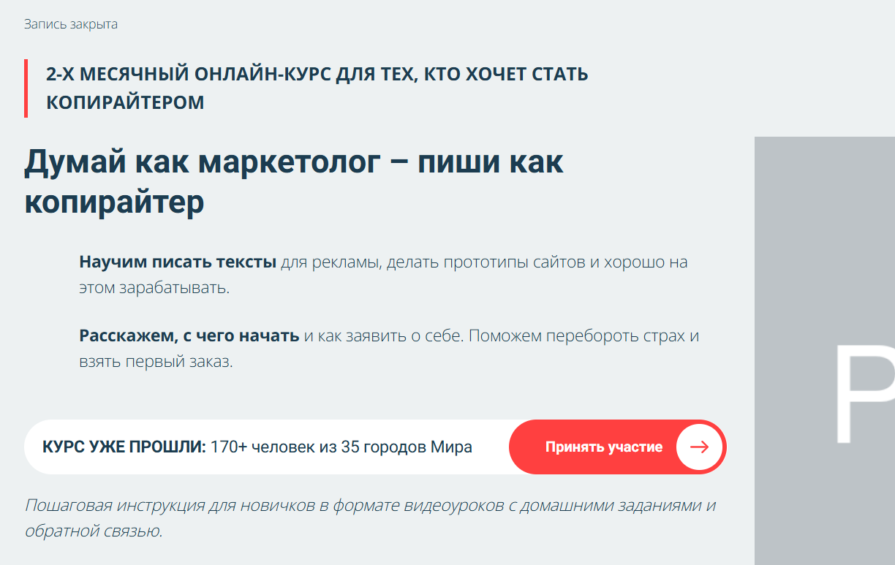
Сайт: https://getproff.ru/course/professiya-kopirayter_copy2
Длительность: 2 месяца
Цена:
БАЗОВЫЙ (бесплатная обратная связь) — 8000р
ПРОДВИНУТЫЙ (с активной обратной связью) — 16500р
Сертификат — имеется
Курс представляет собой 6 модулей и 45 уроков с периодическими актуализациями. Вы можете обучаться в любое время и по своему графику. При желании, программу можно завершить за 3-4 недели. Мы обучим вас написанию рекламных текстов, разработке прототипов сайтов и получению достойного вознаграждения.
Структура обучения
1. Основы написания
- Как писать доступно и понятно.
- Коммуникация с целевой аудиторией.
- Эффективная структура текста: работа с абзацами.
- Форматирование: заголовки, списки и другие элементы.
2. Основы маркетинга
- Определение целевых групп и создание уникального предложения.
- Составление привлекательных заголовков.
- Формулирование конкурентных преимуществ компании.
3. Работа с информацией
- Анализ бизнеса, продукта и конкурентного окружения.
- Структурирование информации.
4. Создание черновика
- Применение текстовой структуры и процесс редактирования.
5. Форматирование
- Перенос текста в прототип и создание рекламных предложений.
6. Поиск клиентов
- Как находить подходящих заказчиков и представлять свои услуги.
Методы обучения
- Записанные уроки. Учитесь в удобное вам время. При необходимости доступ можно временно приостановить.
- Кураторы с практическим опытом. Каждый модуль ведется экспертом в своей области. На одного студента может приходиться до 4 кураторов.
- Общение в чате для студентов. Возможность делиться опытом и находить единомышленников.
Результаты курса
После завершения курса вы приобретете четкое понимание работы копирайтера, научитесь взаимодействовать с клиентами, а также правильно формулировать цены и сроки выполнения задач. Вы зарегистрируетесь на фриланс-платформах, начнете принимать реальные заказы и сможете задавать грамотные вопросы клиентам, что позволит вам создавать качественный контент и понимать маркетинговые аспекты.
Курс «Новые правила копирайтинга XXI века» — Дмитрий Новосёлов (Novoseloff.TV)
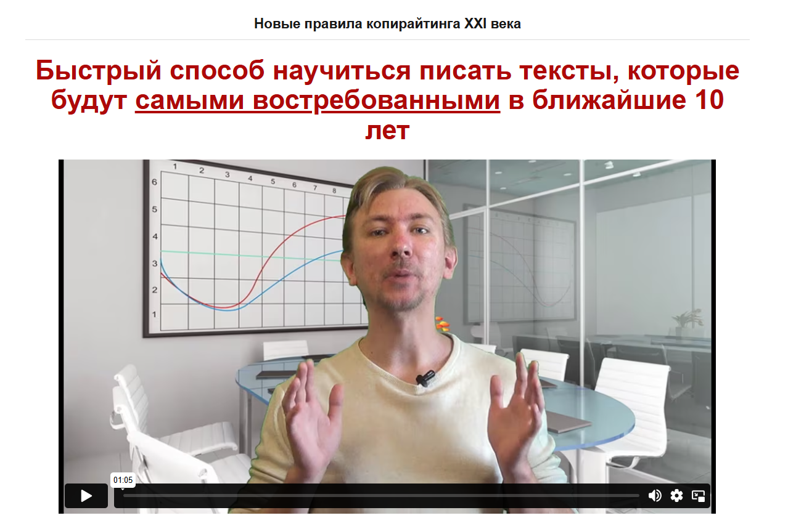
Сайт: https://sp.novoseloff.tv/copywrite-kurs/
Формат: онлайн
Цена: 19500р.
Содержание программы
Модуль 1 — SEO-копирайтинг будущего
- Изучите ключевые слова, чтобы ваши работы выделялись в интернете.
- Освойте создание тизерных заголовков для повышения кликабельности.
- Научитесь писать статьи, которые смогут занять высокие позиции в Яндексе.
- Изучите методику быстрого создания качественного контента.
- Правильная оптимизация материалов для клиентов может стать дополнительным источником дохода.
Модуль 2 — Современный Email-маркетинг
- Формирование ядра продающего сообщения для email-рассылок.
- Методика написания качественных историй для любого типа контента.
- Использование разнообразных заголовков в email для повышения открываемости писем.
- Создание неожиданных «провокационных» писем для активации подписчиков.
- Сборка цепочек автоматизированных писем для обеспечения непрерывных продаж.
Модуль 1 — Прокачка навыка копирайтинга
Вы обучитесь выделять каждое слово в тексте, таким образом, чтобы передавать мысли и эмоции с максимальной выразительностью в компактной форме — это станет вашей главной отличительной чертой в области копирайтинга.
Модуль 3 — Создание уникальных сценариев для вебинаров
Вы разовьете навык создания притягательных заголовков для вебинаров, ориентируясь на свою целевую аудиторию, чтобы привлечь именно тех слушателей, которые вам необходимы (это станет основой для высокой конверсии и достойной оплаты).
Вы освоите девятиуровневую структуру разработки сценария для продающего вебинара, что поможет чётко понимать, какую информацию нужно представлять и в каком порядке.
Вы ознакомитесь с приемами подготовки спикеров к выступлениям по вашим сценариям — поскольку даже отличный текст может быть испорчен неумелым исполнением.
Вы наберётесь опыта в умении интегрировать коммерческую информацию в интересные и полезные материалы вебинара, чтобы у слушателей не сложилось впечатление о навязывании, что, в свою очередь, увеличит их стремление к покупкам, а значит, и ваш доход.
Вы изучите, как создавать сценарии по менее знакомым темам, чтобы ваши материалы были эффективны на 100%, что значительно расширит вашу клиентскую базу и даст возможность принимать заказы самого разного характера.
Вы получите специальный список вопросов, которые можно задать клиенту для помощи в составлении сценария — вам останется только записать все на бумаге и внести корректировки.
Вы откроете для себя секреты создания интересных и эффективных историй для презентаций, помогающих установить доверие слушателей (ведь доверие составляет 80% успеха в продажах).
В итоге вы получите примеры ваших собственных вебинаров на различные темы, которые принесли мне более 50 тысяч рублей. Эти материалы составят отличную основу для вашей работы.
Модуль 4 — Классический копирайтинг с «прямым откликом»
Вы научитесь создавать привлекательные заголовки, которые обеспечят высокий отклик, благодаря чему ваши тексты будут выделяться среди множества других.
Вы освоите простую методику, позволяющую заранее оценить, насколько успешным окажется ваш заголовок до его завершения и отправки клиенту (это называется «кислотная проверка»).
Вы познаете искусство написания продающих текстов по четкой структуре, что позволит читателям принимать решения о покупке сразу, а не откладывать на потом (это и есть основная задача копирайтинга для «прямого отклика»).
Вы изучите семь простых стратегий, которые помогут захватить внимание читателей даже в тех случаях, когда они осознают рекламную природу материала и ваши намерения что-либо продать.
Вы освоите искусство интеграции «продающих триггеров» в ваш текст, что даст читателям возможность увидеть ценность вашего предложения, укрепит доверие к продукту и выделит его уникальные особенности — все эти три аспекта жизненно важны для успешных продаж.
Вы научитесь быстро (в 3-4 предложениях) формировать сильное доверие к себе как к автору и к предлагаемому продукту, что положительно скажется на восприятии вашего текста в целом.
Вы освоите методику создания привлекательных офферов — уникально выгодных предложений, способствующих мгновенной покупке, при этом не утомляя читателя чрезмерными обещаниями.
Вы разовьёте умение выявлять и опровергать возражения потенциальных клиентов ещё до их появления, делая это так тактично, что у них не останется оснований отказа от вашего предложения.
Вы освоите технологию «эмоциональной раскачки» читателя в текстах, что позволит им закончить чтение в нужном состоянии и настроении — это значительно увеличит ваши результаты по продажам.
Вы научитесь писать так, что даже при быстро пробежном «диагональном» чтении, ваши потенциальные клиенты смогут уловить 100% информации о продаже и убедительных аргументах из вашего текста (это поможет вам создавать успешные материалы даже при высокой конкурентной обстановке).
Модуль 5 — Заработок и монетизация
Вы значительно улучшите своё портфолио, опираясь на тексты, созданные в процессе тренинга, что станет вашим важнейшим инструментом для будущих продаж.
Вы соберёте отзывы от первых клиентов и правильно их оформите (это то, на что зачастую не обращают внимания 95% копирайтеров, что даст вам возможность выделяться среди остальных).
Вы сможете развить «сарафанное радио» — ключевой источник привлекательных и постоянных клиентов для копирайтера.
Вы создадите собственные контентные платформы для формирования личного бренда, что выделит вас среди конкурентного окружения и клиенты будут готовы платить вам больше за аналогичные услуги.
Вы получите знания о том, как настраивать рекламу в ВКонтакте, что позволит получать заказы и эффективно их реализовывать, не покидая свою учетную запись.
Вы освоите методы взаимодействия с клиентами, которые позволят вам уверенно повышать свои расценки, стремительно достигая желаемого баланса между свободным временем и уровнем дохода.
Вы поймёте, как создать сайт копирайтера и размещать статьи, привлекая бесплатные заказы через поисковые системы (клиенты, пришедшие таким образом, как правило, охотно соглашаются на сотрудничество и часто обращаются снова по рекомендациям).
Краткое содержание курса
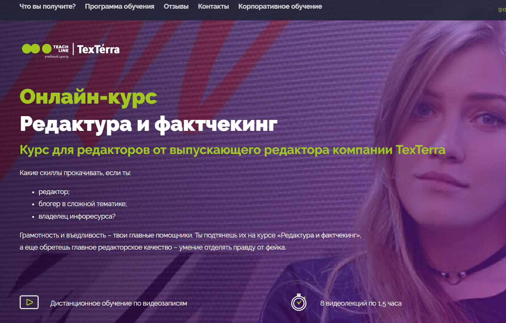
Сайт: https://school.rayushkina.com/copy-free
Цена: бесплатно
Это доступное введение в профессию: алгоритмы создания текстов по разнообразным запросам и два чек-листа в подарок!
Вас ожидает 5 коротких уроков, 5 учебных писем и 5 домашних заданий.
Два часа видеоматериалов помогут вам самостоятельно разрабатывать тексты и находить клиентов!
Содержание курса
За 10 дней вы освоите основы копирайтинга, даже если ранее никогда не работали в сфере бизнеса или продвижения!
- Структура информационных текстов, сбор и подготовка материалов.
- Работа с заголовками: формулы их создания.
- Структура, содержание и усиление продающих текстов.
- Базовый маркетинговый анализ для копирайтера.
- Особенности и структура текстов для различных социальных сетей.
- Разные типы текстов для соцсетей и их написание.
- Ключевые элементы историй и задачи сторителлинга.
- Разновидности, цели и структура текстов для брендинга.
- Источники идей и инструменты для проверки ваших текстов.
Автор курса
Инесса Шаповалова
Копирайтер и маркетолог с пятилетним опытом работы в области копирайтинга. Автор более 3000 текстов для различных задач и проектов. Приглашаемый спикер на семинарах и конференциях по маркетингу. Соавтор и преподаватель интенсивов и марафонов по копирайтингу в Школе Успешного Фриланса. Постоянный автор и редактор проектов в сфере интернет-маркетинга и фриланса. Создатель текстовых воронок для продаж и продвижения.
Итоги курса
По завершению бесплатного курса по копирайтингу вы:
- Научитесь создавать тексты для сайтов и блогов.
- Составите эффективный продающий текст.
- Создадите посты для различных социальных сетей с разными целями.
- Познакомитесь с жанром «сторителлинг».
- Составите свой первый текст для брендинга.
Таким образом, вы получите 5 УЧЕБНЫХ УРОКОВ ПО ОСНОВНЫМ ЖАНРАМ ТЕКСТОВ, 5 Обучающих Писем с Теорией и соберете портфолио начинающего копирайтера!
Курс по редактуре и фактчекингу
Сайт: https://teachline.ru/courses/redaktura-i-faktcheking/
Цена: 12000-18000р.
Продолжительность: 8 видеолекций по 1,5 часа
Документ о завершении курса: сертификат
Содержание курса для редакторов
Мы изучим, как эффективно взаимодействовать с авторами. Хорошие редакторы высоко ценятся всеми участниками проектов, в то время как плохие могут вызывать недовольство как со стороны авторов, так и руководства.
В начале курса акцентируем внимание на разработке эффективной редакционной политики. Чем лучше вы справитесь с этой задачей на старте проекта, тем больше благодарностей и создание положительного имиджа вы сможете получить в дальнейшем. Этот навык крайне важен.
Вы освоите практические навыки проверки фактов, включая научные данные и переводы, и узнаете, где искать нужную информацию, даже если тема сложна.
Выовершите логические и стилистические навыки, а также способность структурировать текст — эти аспекты можно отточить. Мы будем регулярно практиковаться в этих навыках на каждом занятии.
В заключительной части курса проанализируем несколько текстов с ошибками и преобразуем их в качественные произведения, которыми смогут гордиться как автор, так и редактор. Независимо от вашего уровня, мы обучим основам фактчекинга и объясним его доступными словами.
Что ожидает по завершении курса
Ошибки перестанут быть проблемой в ваших проектах. Негативные комментарии исчезнут, а необоснованные критики вы сможете легко опровергнуть. Вы освоите сложные темы, которые ранее могли вас пугать. Эти сложные аспекты обычно связаны с высокой оплатой, не так ли? Данный курс — это не только тренинг, но и возможность увеличить доход благодаря полученному сертификату.
Программа курса
- Обязанности редактора: основные принципы, художественная и коммерческая редактура, особенности работы на разных платформах.
- Взаимодействие с авторами, составление технических заданий, как давать и принимать правки.
- Создание редакционной и контентной стратегии: важные аспекты, которые стоит учитывать в процессе разработки, примеры практического анализа.
- Фактчекинг: методы проверки текстов, оценка репутации бренда и автора, работа с экспертами и правовые нюансы, связанные с «сложными» темами и обязанностями журналистов.
- «Копирайтинг с нуля за 30 дней»
- Курс по SEO и LSI копирайтингу «Статьи и деньги»
- Курс «Прототипы продающих текстов»
- Курс по SMM-копирайтингу «Тексты для соцсетей»
- Курс «Скрипты продаж»
- Курс «Создание сайта с портфолио копирайтера за 1 час»
- Курс по рассылкам в Mailchimp
- Экспресс-уроки по копирайтингу
- Паша Молянов
- Леша Рожков
- Определять целевую аудиторию;
- Формулировать преимущества для читателей;
- Работать по продуктивным схемам написания текстов;
- Создавать тексты различных типов для достижения бизнес-целей.
Проверка научных фактов без научного образования
Как распознать надежные источники информации? Как убедиться в достоверности научных данных, не обладая академической квалификацией? Где находить последние достижения науки? За кем из экспертов в социальных сетях стоит следить для получения ценного контента?
Проверка переводов без знания языка
Как эффективно использовать различные источники и справочные материалы? Как удостовериться в высоком уровне работы переводческих агентств? Где найти переводчиков, носителей языка и специалистов для проверки текстов на оригинальность?
Редактирование: девять шагов к созданию качественного текста
Что можно извлечь из знаний классической школы редактирования? Какие распространенные ошибки следует избегать? Как справляться с неологизмами, заимствованными словами и феминитивами?
Редактирование: практическое занятие
Разбор двух текстов с комментариями — как по статьям сайта, так и по публикациям в социальных сетях.
Экспресс-редактирование
Доступные инструменты и списки для проверки. Как искать вакансии, составлять резюме и коммерческие предложения. Эффективное создание личного бренда. Подготовка тестовых заданий для авторов и помощников. Взаимодействие с клиентами. Рекомендации по литературе для редакторов.
Автор
Дарья Завьялова
С 2015 года я работаю в компании TexTerra. Моё начало было с позиции редактора на проектах для клиентов, после чего я переключилась на написание и редактирование материалов для крупных внутренних заданий. Далее я занялась SMM, достигнув роли контент-стратега и главного редактора. Эти разнообразные должности обогатили меня опытом, с которым я готова поделиться в рамках этого курса.
Я обучалась научной журналистике и регулярно повышаю квалификацию в данной области. Изучаю специализированные книги, слежу за авторитетными ресурсами и управляю сообществами, касающимися сложных тем: медицины, фармацевтики, иностранных языков, строительства и тяжелой техники. В своей редакции я обучаю новичков, а также веду лекции на курсах, таких как «Коммерческий автор» и «SMM-специалист». Я не привыкла упускать важные детали и готова подготовить вас к этому на своём курсе.
«Пиши живее!» от «Тимуроки»
Сайт: https://freetutorials.ru/courses/200-pishi-zhivee!
Общее количество уроков: 6
Сертификат по завершении: НЕТ
Инициатор курса: Тимур Аникин
Описание курса
Этот бесплатный курс поможет избежать использования стандартных текстов. Вы научитесь создавать увлекательные и уникальные тексты. * Каждое занятие включает 15-25 минут контента, легко воспринимаемого на слух. После теоретического блока рекомендуется выполнять практические задания на протяжении 3-4 недель, чтобы укрепить свои творческие навыки. Сколько вы уделите этому времени — зависит только от вас. Курс направлен на развитие умений написания статей, писем, рабочих документов, блогов, рекламных текстов и комментариев в Facebook.
Школа копирайтинга Юлии Волкодав
Добро пожаловать в нашу Школу копирайтинга!
1. Чтобы пройти бесплатный курс по основам копирайтинга, выберите в меню раздел «Попробуй свои силы».
2. Для изучения создания продающих текстов перейдите в раздел «Мой первый продающий текст».
3. Для углубленного обучения на платных курсах выберите нужный пункт в меню и перейдите на страницу для оформления покупки обучающего ключа. После регистрации с полученным ключом будет предоставлен доступ к выбранному разделу.
Бесплатные онлайн курсы копирайтинга для начинающих копирайтеров от Даниила Шардакова
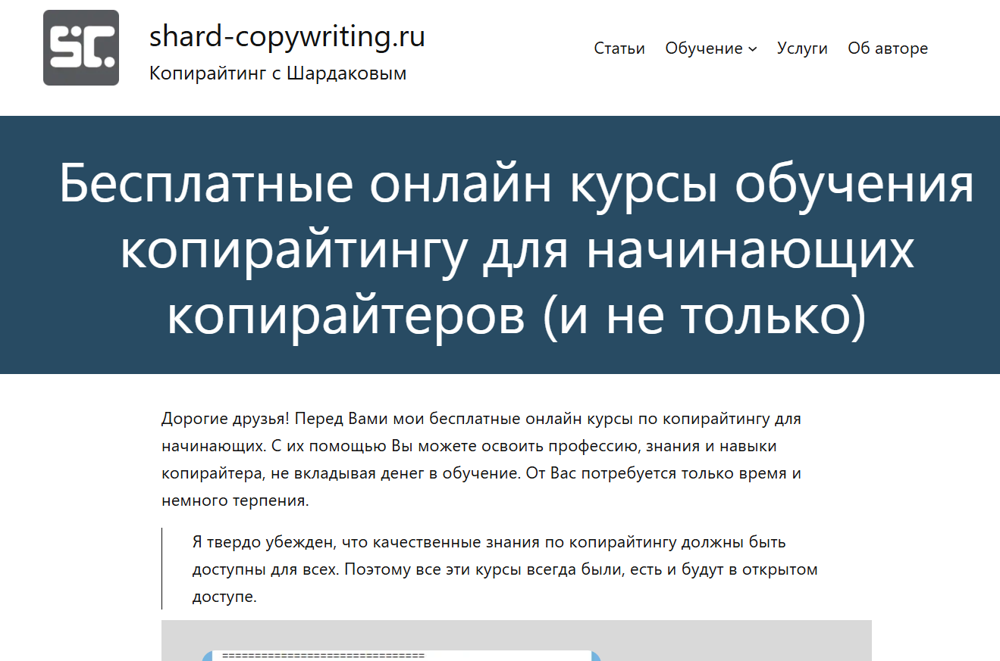
Доступные курсы:
Информация о сертификатах и помощи в трудоустройстве.
Курс «ОСВОЙТЕ ПРОФЕССИЮ КОПИРАЙТЕРА И НАЧНИТЕ ПРОДАВАТЬ СТАТЬИ В ИНТЕРНЕТЕ УЖЕ СЕГОДНЯ!»
Сайт: http://sub.ulia-volkodav.ru/poprobyi
Цена: отсутствует информация
Десять подробных видеоуроков с доступными объяснениями — полностью бесплатный курс!
Начните достигать первых результатов уже в процессе обучения! Освойте профессию копирайтера всего за несколько дней!
Научим писать от «Сделаем»
Сайт: https://sdelaem.agency/courses/letters-how-to-write
Цена: 7 000 руб.
Формат: Email-рассылка
40 обучающих писем с ежедневными поступлениями.
Закрытый чат для консультаций и обсуждений.
Email-курс по копирайтингу, предлагаемый агентством «Сделаем», направлен на обучение созданию качественного контента для бизнеса, формированию контент-планов и анализу их эффективности.
Кому подойдет курс
Копирайтерам
Фрилансерам или авторам, готовым работать в команде, стремящимся повысить свою ценность и участвовать в более интересных проектах.
Редакторам и маркетологам
Тем, кто разрабатывает задания для копирайтеров и хочет знать, на какие нюансы следует обращать внимание.
Предпринимателям
Тем, кто хочет самостоятельно писать тексты для своего бизнеса, избегая услуг агентств.
Программа курса
Общие советы:
Как писать интересно, формировать заголовки, удерживать внимание, использовать ссылки, выбирать заглавные изображения, оформлять текст, добавлять скриншоты, разрабатывать прототипы страниц, применять различные форматы контента. Как писать для соцсетей, корпоративных блогов, СМИ, лендингов, заниматься рекламой в Дзене, создавать email-рассылки, сценарии, документы, кейсы, новости и пресс-релизы, описания компаний и товаров, составление коммерческих предложений, описание вакансий, подборки, презентации, лонгриды, проводить глубокий анализ, работать с социальными сетями, заниматься SEO, управлением комментариями и негативными реакциями, анализом веб-данных, использовать UTM-метки и определенные KPI для авторов, разрабатывать контент-планы, находить темы для статей, редактировать, писать технические задания, избегать распространенных ошибок авторов и взаимодействовать с редактором в команде.
Создатели курса
Занимается привлечением клиентов в агентство и анализирует успех различных проектов.
Отвечает за управление агентством и предоставляет поддержку 50 авторам и 12 редакторам.
Курс «Профессия: Копирайтер» от Convert Monster
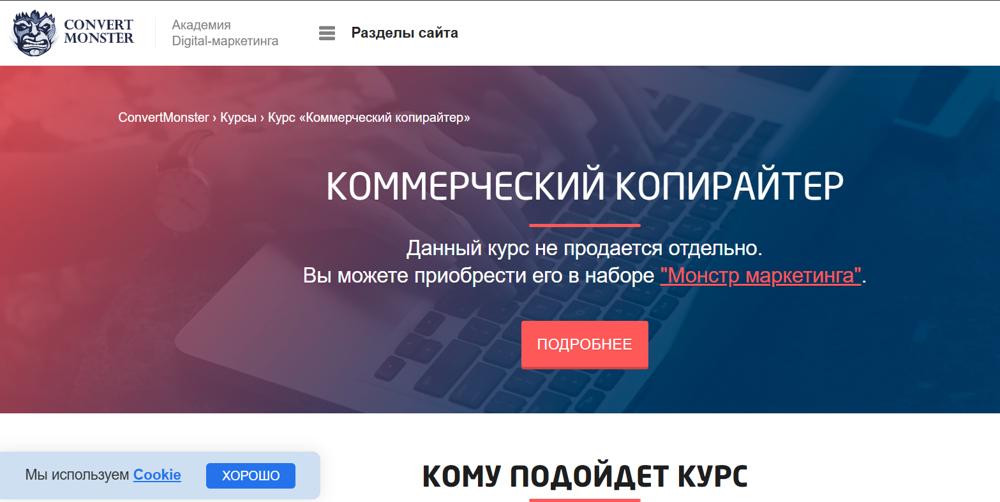
Курс предназначен для подготовки копирайтеров, обладающих навыками и готовым портфолио.
Формат обучения: 16 занятий с домашними заданиями и реальными консультациями.
Получение сертификата по завершении курса: только после успешного выполнения экзаменационной работы.
Поддержка куратора: проверка домашних заданий в течение всей учебы и 30 дней помощи после курса.
Цена: от 2750 рублей в месяц! Доступна рассрочка на 3, 6 или 12 месяцев без дополнительных комиссий. Полная сумма курса составляет 55 000 рублей.
Автор курса
Антон Петроченков имеет более 15 лет профессионального опыта в интернет-маркетинге с 2006 года. Он владелец агентства Convert Monster и работает с крупными брендами, такими как Michelin и Daewoo. В 2017 году агентство заняло место в списке 100 лучших агентств рунета по версии Tagline. Антон является сертифицированным специалистом по Яндекс.Директ, Google Ads и другим инструментам.
Результаты, которые вы получите после прохождения курса
Вы освоите технику написания разнообразных текстов: от постов в социальных сетях до коммерческих предложений и сценариев для видео. Создадите впечатляющее портфолио, которое будет включать завершенные работы, востребованные на рынке. Сможете решать специфические бизнес-задачи с помощью текстового контента, включая создание скриптов продаж и пресс-релизов, а также проектирование лендингов. Получите возможность трудоустройства или новых клиентов, увеличивая свой доход через приобретение новых знаний.
Вы научитесь:
Обратите внимание! Обучение базируется на примерах реальных проектов. Все написанные в процессе курса тексты можно будет использовать в вашем портфолио. По окончании учебы вы получите готовое резюме и шесть наиболее запрашиваемых текстов для ваших будущих работодателей. Вы получите практический опыт в копирайтинге и, возможно, найдете первых клиентов!
Содержание курса
15 практических занятий продолжительностью по 1,5 часа каждое.
Занятие 1. Подготовка успешного кейса.
Заголовок и название кейса, подзаголовок, основные этапы презентации, описание проекта, цели сотрудничества, процесс работы, результаты, дальнейшие планы, выводы.
Занятие 2. Основы копирайтинга.
Кто такой копирайтер, виды текстов в зависимости от стиля и назначения, ключевые характеристики качественного текста: идея, авторитетность, фактические данные, образность, структура, исследование продукта (товара, услуги, личности).
Занятие 3. Определение целевой аудитории.
Путь потребителя, форматы персонажей, их нужды, аргументы и конкретные примеры.
Занятие 4. Создание семантических карт.
Анализ интересов целевой аудитории и выявление их проблемных зон.
Форумы
Комментарии в соцсетях
Темы/обсуждения
Посты в Instagram
Отзывы
Пирамида Минто
Структурирование информации
Домашнее задание:
Разработать семантическую карту для постов.
Творческое задание:
Создать два текста, в которых будут представлены аргументы и контраргументы к тезису.
Online-консультация 1. Спикер: Антон Петроченков
ЗАНЯТИЕ 5. Понятие выгоды
Треугольник: признание – логика – эмоции.
Связь между картой персонажа и продуктовой картой.
Формулировка выгод:
- Смысловая
- Тезисная
- Образная
Применение метафор.
Специфика экономического обоснования:
- Тексты для контекстной рекламы
- Тексты для таргетированной рекламы
- Посадочные страницы и веб-сайты
- Профили в Instagram
- Сложные метафоры в текстах
Домашнее задание:
Сформулировать три варианта Уникального Торгового Предложения (УТП).
Творческое задание:
Тематика: летний день.
ЗАНЯТИЕ 6. Основы текстового каркаса
Дедуктивный и индуктивный подходы.
Метод убедительных аргументов.
Аргументирование, подтверждения и возражения.
Уточнения и сложные аспекты.
Использование каркасных схем в:
- блогах
- рекламных материалах
- образовательных материалах
- новостных публикациях
- пресс-релизах
Задание на дом:
Создать пирамиду Минто для учебной статьи и посадочной страницы.
Творческое задание:
Написать басню.
ЗАНЯТИЕ 7. Искусство создания продающего текста. Часть I
Модель AIDA.
Модель PMPHS.
Создание материалов:
- Заголовки
- Подзаголовки
- Формулы для публичных выступлений
- Формулы выгод
- Связь с брендом и бизнесом
Задание на дом:
Подготовить три варианта увлекательного начала текста.
Творческое задание:
Написать детский стих.
Онлайн-консультация 2. Спикер: Антон Петроченков
ЗАНЯТИЕ 8. Искусство продаж через текст. Часть II
Формулы убедительных аргументов.
Шаблоны отзывов.
Упор на ценные предложения.
Финансовые гарантии.
Риторические приемы.
Сертификаты, награды и отзывы.
Активизация бизнеса с помощью текста.
Стратегии призывов к действию.
Задание на дом:
Составить текст для реализации продажи.
Творческое задание:
Определить стиль текста: высокий или низкий.
ЗАНЯТИЕ 9. Информационный стиль написания
Определение информационного стиля.
Основы грамотности, избежание клише.
Эффективная передача ключевых моментов. Простые схемы для успешных текстов.
Редактирование с помощью glvrd.
Способы оформления лаконичных текстов: заголовки, буллеты, списки.
Задание на дом:
Создать карточки товара.
Творческое задание:
Подражать классикам.
ЗАНЯТИЕ 10. Написание обучающих статей
Принципы концепции Минто.
Структура учебной статьи.
- Основная идея
- Краткое резюме
- Шаги описания
- Сложные аспекты
- Выводы
Компоненты обучающей статьи:
- Блоки
- Списки
- Оглавления
- Подзаголовки
- Черновые версии
- Оформление
Задание на дом:
Подготовить учебную статью или кейс.
Творческое задание:
Сочинить стихотворение с ненормативной лексикой.
Онлайн-консультация 3. Спикер: Антон Петроченков
ЗАНЯТИЕ 11. Посты для социальных медиа
Деловая стилистика текста.
Индивидуальные посты.
Эмоциональные публикации.
Записки на полях.
Провокационные сообщения.
Задание на дом:
Создать три поста в соцсетях в разных стилях.
Творческое задание:
Ласковый дактиль.
ЗАНЯТИЕ 12. Образность текста
Штампы.
Прилагательные высокой оценки.
Концепция метафоры.
Контекст.
Разновидности образов.
Гипербола, парцелляция, контраст.
Анализ эмоционального оттенка текста.
Творческое задание:
Мечта.
ЗАНЯТИЕ 13. Создание текстов для видео
Основная схема работы с текстами для видео.
Скрипты для видео с подпиской.
Скрипты для рекламных видео.
Скрипты для видео-прогревов.
Скрипты для информационных роликов.
Скрипты для обзорных видео.
Задание на дом:
Подготовить сценарий для видео.
Творческое задание:
Юмористическая история.
Онлайн-консультация 4. Спикер: Антон Петроченков
ЗАНЯТИЕ 14. Тексты для коммерческих предложений и презентаций
Структура коммерческого предложения по методу А. Бурбе.
Создание логики коммерческого предложения.
Правила разработки эффективных презентаций.
Формулировка аргументов.
Итоговый скрипт.
Задание на дом:
Создать коммерческое предложение для себя в качестве специалиста.
Творческое задание:
Сказка для взрослых.
ЗАНЯТИЕ 15. Нюансы текста
Материалы для корпоративных публикаций.
PR и пресс-релизы.
Посадочные страницы.
Триггеры.
Слово-магниты.
Скрипты.
Задание на дом:
Создать скрипт для самопрезентации в личных сообщениях.
Творческое задание:
Возврат к мечте.
ЗАНЯТИЕ 16. Искусство сторителлинга
Жанры сторителлинга.
Структура сюжета и развитие персонажа.
Личные истории.
Аллегории.
Фантастические герои.
Творческое задание:
Событие, которое произвело на меня сильное впечатление.
Сайт: http://smm.mastertext.ru/
Цена: 8000-12000 руб.
Автор
Дмитрий Кот, руководитель «Убедительного Маркетинга». Программа состоит из 4 недель интенсивного обучения с 9 занятиями и 8 домашними заданиями. Разнообразные приемы и техники, практические задания и обратная связь от Дмитрия Кота.
Кому подойдет этот тренинг:
- Предпринимателям
- Владельцам сообществ и авторам контента
- Копирайтерам
- SMM-менеджерам
Какие методы будем изучать?
- Методы, как заинтересовать аудиторию в обсуждении публикации
- Способы успешного завершения поста, если традиционное резюме оказывается недостаточным
- Как привлечь внимание читателя с первой строки, даже в больших текстах
- Использование свежих новостей и скандальных тем
- Как регулярно позиционировать себя как специалиста, чтобы это всегда звучало привлекательно
- Как вдохновить читателя и какие преимущества это приносит
- Как использовать юмор в отношении товара и каких результатов можно достичь
- Способы вызвать необходимую эмоциональную реакцию: поднять настроение или спровоцировать гнев, но избегая оскорблений
- Разнообразие в стиле: использование ярких метафор, лаконичных фраз и мемов
- Как писать истории или делиться личными событиями, чтобы захватить интерес читателя и вызвать желание продолжать чтение.
Курс программы
Занятие 1:
Производственные публикации.
16 февраля в 16:00
Структура успешного поста. Типы проблем: настоящая проблема, необходимость выбора, страх ошибки. Как использовать данные аспекты в текстах. Роль мужчин и женщин и их применение в публикациях. Два практических задания для закрепления знаний.
Занятие 2:
Развлекательные публикации.
18 февраля в 16:00
Как работает принцип «развлекая, мы продаем». Два основные преимущества ньюсджекинга: привлечение внимания и симпатия алгоритмов соцсетей. Психология и копирайтинг на практике.
Занятие 3:
Практическое занятие по метафорам.
21 февраля в 16:00
Понятие метафор. Филологические основы и психотерапевтические методики для создания метафор. Пять практических заданий для закрепления материала.
Занятие 4:
Вызывание и усиление эмоций.
23 февраля в 16:00
Почему так важно воздействовать на эмоции читателей? Приемы «конфликт ценностей», «управляемая агрессия» и «продажа светлого будущего». Практическое задание.
Занятие 5:
Работа с недостатками продуктов и негативными отзывами.
25 февраля в 16:00
Методы нивелирования слабых сторон. Как использовать негативные отзывы с пользой. Три практических упражнения.
Занятие 6:
Скрытые продажи в текстах.
30 февраля в 16:00
Как замаскировать продажи в тексте и каковы причины этого? Разберем распространенные ошибки и проверенные схемы.
Занятие 7:
Анализ домашних заданий.
4 марта в 16:00
Обсуждение ошибок и удачных примеров. Анализ, что стоит развивать, формулировка выводов и общих моментов.
Занятие 8:
Привлечение внимания и мотивация к действию.
7 марта в 16:00
Как заинтересовать читателей? Как побудить их к действиям? Синергия копирайтинга и психологии.
Занятие 9:
Популярные подходы — что работает, а что нет.
10 марта в 16:00
Эффективные техники сторителлинга. Уроки из жизни и анекдоты — как сочетать развлечение с продажами. Уязвимости методов и советы по их применению.
Курс Взлет веб-райтера
Вебсайт: http://vzlet.web-copywriting.ru/
Продолжительность курса: 3 месяца
Стоимость:
МИНИМАЛЬНЫЙ — 12.500 руб./месяц или 25.000 руб. сразу.
МАКСИМАЛЬНЫЙ — 15.000 руб./месяц или 30.000 руб. сразу.
ПРЕМИУМ — 30.000 руб./месяц или 50.000 руб. сразу.
Формат: 40 видеоуроков
Содержание курса
1. ИССЛЕДОВАНИЯ
Студенты учатся работать с различными источниками информации, отделять достоверные данные от недостоверных, проводить социологические исследования и интерпретировать их результаты.
2. Логика повествования
Статья должна быть понятной, даже если тема сложна. Чем яснее логическая структура, тем легче материал воспринимается читателем.
3. Стилистика
Каждый участник курса создает свой уникальный стиль письма. Это не только красивый язык, но и работа со смыслом. Написание текста, который будет доступен и понятен целевой аудитории.
4. Редактирование
Создание текста — это только половина дела. Редактирование превращает черновик в готовую версию. Вы научитесь улучшать свои тексты до нового уровня. Уделяется внимание редактированию как искусству.
5. Оптимизация
Вы освоите два направления SEO и научитесь формировать семантическое ядро, определять ключевые слова и органично интегрировать их в свои тексты. Каждый выпускник курса «Взлет» обязательно освоит работу с мета-тегами.
6. Оформление и верстка
На начальном этапе верстки мы уделим внимание качественному отображению наших материалов, что даст возможность в будущем вносить изменения. В процессе углубленной стилизации вы ознакомитесь с разнообразными стилями и особенностями электронной верстки.
7. Иллюстрирование
Вы научитесь находить гармонию между текстом и изображениями, выбирая подходящие картинки и разрабатывая рекомендации для дизайнеров и других специалистов.
Основные тренеры
Сергей Трубадур
Основатель школы, методист и владелец веб-копирайтингового агентства. Сергей начал свою карьеру как журналист в региональном издании, с 2007 года работает удаленно.
Виктория Закальная
Психолог, редактор и руководитель статейного факультета проекта «Остров». С 2010 года работает в формате фриланса, с 2018 года проводит мастер-классы. Автор курса по личному брендингу для копирайтеров и соавтор курсов «Наживка для клиента» и «Охота на заказчика». Мать двоих детей.
Форматы текстов, которые вы изучите
Перед началом написания текстов мы предложим вам набор инструментов, которые значительно упростят работу современного автора. Каждый из инструментов будет изучен и протестирован на практике.
1. Проблемные статьи
Или «задачи». Люди выходят в интернет, чтобы искать ответы на свои вопросы. Такие материалы представляют собой основной элемент работы веб-райтера.
2. Обзоры
Описание товаров, услуг и событий помогает читателям сделать выбор. Эти материалы могут выступать в качестве скрытой рекламы.
3. Инструкции
Вы смежне научитесь писать четкие и доступные инструкции, которые станут полезными для ваших читателей и будут высоко оценены работодателями.
4. SEO-райтинг
Методы оптимизации текста постоянно меняются, но статьи с ключевыми словами по-прежнему остаются актуальными.
5. Карточки товаров и их описания
Этот формат часто ассоциируется с копирайтингом, но обычно доверяется веб-райтерам. Сотрудничество с интернет-магазинами остается востребованным.
6. Посты в социальных сетях
Социальные сети теперь используются не только для развлечений. Бизнес требует продающего и информационного контента.
7. Авторская колонка и ведение блогов
Эти универсальные навыки станут полезными для личной раскрутки и долгосрочных проектов.
8. Интервью
Навыки разработки опросов и проведения интервью значительно повысят качество ваших материалов, не ограничиваясь лишь жанром.
9. Рецензии
Они окажутся полезными как для выполнения заказов, так и для подтверждения вашего профессионализма.
10. Новости
Научитесь правильно формулировать и писать новости.
11. Отзывы
Сбор отзывов — это только первая часть успеха. Упаковка и продажа информации — навыки, требующие практики.
12. Шпаргалки
Мини-формат, используемый клиентами для управления социальными сетями и создания инфографики.
Продвинутый курс Главреда
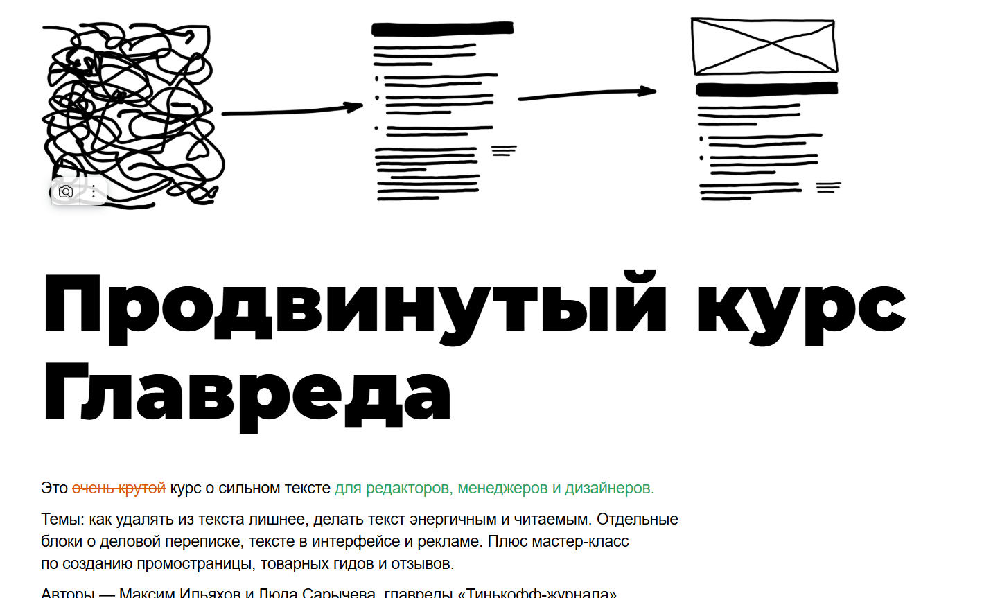
Сайт: https://course.glvrd.ru/
Цена: 1500-3000 р.
Формат: 45 писем в день или вся информация сразу.
Без домашних заданий.
Этот оригинальный курс посвящен созданию качественного текста для редакторов, менеджеров и дизайнеров. Темы курса охватывают технологии упрощения текста, его динамики и легкости восприятия. Отдельные модули фокусируются на деловой переписке, текстах для интерфейсов и рекламных материалах. В программу также включен мастер-класс по созданию промостраниц, товарных гайдлайнов и отзывов.
Авторы
Максим Ильяхов и Люда Сарычева, главные редакторы «Тинькофф-журнала» и «Модульбанка», первоавторы рассылки «Мегаплана», соавторы бестселлера «Пиши, сокращай» 2017 года и книги «Новые правила деловой переписки» 2018 года.
Копирайтинг с нуля — Василий Блинов
Сайт: https://school.iklife.ru/infocopywriting
Цена курса:
Тариф «Без практики» — 9 990 р.
Тариф «С практикой» — 15 990 р.
Целевая аудитория курса
Автор
Для желающих освоить профессию копирайтера и зарабатывать удаленно, создавая тексты для сайтов.
Веб-мастер
Для тех, кто развивает свои информационные сайты и хочет научиться писать качественные материалы.
Блогер
Для людей, ведающих свои блоги в социальных сетях.
Структура курса
Блок 1. Основы
Начнем с основ копирайтинга, внедряя новые привычки и развивая ключевые навыки, будем знакомиться с полезными сервисами и инструментами для работы с текстами.
Блок 2. Поиск работы и доход
Заработок — наша главная цель. Мы научимся искать вакансии как на биржах, так и самостоятельно, создадим привлекательное портфолио на основе практических заданий и освоим стратегии самопрезентации в интернете.
Блок 3. Тексты для веб-сайтов
В этой части нашего курса мы сосредотачиваемся на создании высококачественных текстов для веб-ресурсов. Мы обсудим, как правильно структурировать и оформлять информацию, оптимизировать материалы для поиска и работать с панелями известных систем управления контентом.
Цех копимаркетологов — Сергей Трубадур
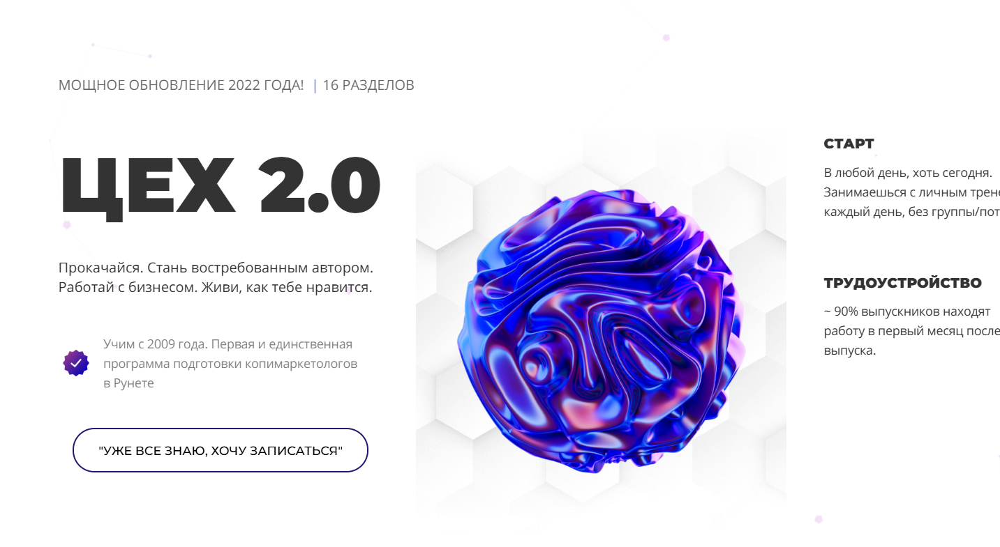
Веб-сайт: http://copycoaching.web-copywriting.ru/
Продолжительность курса: 3 месяца
Стоимость:
СТАНДАРТ:14.500 руб./мес.
ВИП:18.500 руб./мес.
ПРЕМИУМ:30.000 руб./мес.
Вы будете взаимодействовать с наставником в индивидуальном формате в течение 3-6 месяцев, получая до 10 проверок в неделю.
В процессе обучения вы освоите более 5 видов текстов, востребованных у клиентов (возможности до 12 форматов).
Вы научитесь основам копирайтинга и маркета, включая проведение маркетингового анализа, изучение трафика, веб-аналитику и многое другое.
Проработайте привлекательное портфолио и получите диплом по завершении обучения, что значительно облегчит вашим первым шагам на рынке труда.
Станьте кандидатом на вакансии с достойной зарплатой, независимо от вашего региона (в среднем от 50 до 70 тысяч, а с значительным опытом — еще выше).
Наша школа работает с 2009 года и считается одной из ведущих в этой области (у нас более 150 выпускников по данной программе).
Что вы сможете изучить
1. Сбор исходной информации
Вы овладеете техникой работы с брифами и научитесь проводить эффективные интервью с клиентами. Вы поймете, как выявлять критически важные аспекты для продаж и определять, что является менее значимым. Мы также обсудим, как поступать в ситуациях, когда клиент не предоставляет нужные данные или предлагает стандартные решения. В ходе практических занятий с брифами вы свяжетесь как минимум с одним реальным клиентом. Кроме того, мы предоставим шаблоны брифов, используемые в агентстве Сергея Трубадура (каждый вид брифа имеет свою специфику).
2. Выполнение маркетингового анализа
Вы освоите методики анализа продукта, рыночной среды, целевой аудитории и конкуренции перед тем, как приступить к написанию текста. Этот этап, хотя и незаметен, занимает немало времени и оказывает прямое влияние на качество вашей работы.
Мы начнем с элементарных подходов — поискового анализа и личных исследований, а затем перейдем к более сложным методам, таким как использование Wordstat, Google Trends, анализ поисковых запросов и парсинг в социальных сетях. Вы научитесь организовывать информацию с помощью таблиц и умственных карт, и получите доступ к образцам и шаблонам.
3. Создание текстов в пяти форматах (+ их разновидности)
Сначала вы получите шпаргалки с основными структурами текстов для различных целей. Эти схемы вам придется адаптировать под свои собственные проекты.
Мы рассмотрим привычные элементы продающего текста, которые применяются в большинстве случаев, и дадим основы для других форматов. Постепенно, с увеличением опыта, вы сможете самостоятельно создавать тексты для любых задач. Также будет уделено внимание редактированию и вычитке, пусть и не столь структурировано, как на факультете журналистики, но при необходимости мы поможем улучшить вашу письменную речь.
4. Проектирование прототипов (для лендингов и сайтов)
Вы познакомитесь с программой Axure для прототипирования, включая динамические возможности. Текст является лишь одним уровнем вашей работы, в то время как создание прототипа — это совершенно другой процесс. Умение разрабатывать прототипы — ключевой навык для копирайтера, работающего в маркетинге, особенно в агентствах. Вы научитесь мыслить шире, чем просто текст, и освоите основы юзабилити, сможете передавать маркетинговые идеи через другие элементы. Изначально это может показаться трудным, но не волнуйтесь — это всего лишь начало.
5. Понимание трафика
На сайт вашего клиента могут приходить посетители из самых разных источников. Разнообразные каналы могут открывать разные страницы, что, в свою очередь, влияет на содержание текста. Копирайтеру, ориентированному на маркетинг, крайне важно понимать, как эти взаимосвязи влияют на адаптацию текста и наоборот. Распространенной ошибкой является несоответствие между трафиком и текстом, что может привести к финансовым потерям клиента.
6. Формирование гипотез в веб-аналитике
Работа над текстом не заканчивается его написанием. Вы научитесь формировать гипотезы для достижения максимальной конверсии на страницах продаж. Также вы получите базовые знания о методах тестирования своих предположений.
Разработка всей воронки продаж
Продающая страница — это лишь часть более широкой системы продаж. Хотите повысить свою профессиональную ценность? Изучите, как создавать полные воронки продаж, включая выбор ассортимента и различных инструментов для осуществления сделок. За такие услуги, как правило, платят значительно больше. Мы обсудим, как разработать базовые воронки для как информационных проектов, так и небольших бизнесов.
Кто проводит обучение
Сергей Трубадур
Основатель школы, методист и владелец агентства веб-копирайтинга.
Родион Голованов
Тренер, копирайтер-маркетолог и заведующий факультетом копимаркетинга.
Татьяна Логинова
Выпускница школы и куратор.
Ч чему вы научитесь
- Основы написания продающего текста
Это базовый формат, с которого начнется ваше погружение в маркетинговый анализ и создание текстов, способствующих увеличению продаж. На практике данный формат редко применяется в чистом виде, но он послужит основой для других форматов.
2. Лендинг для услуги и пакета услуг
Этот тип страниц является важнейшим элементом для формирования рекламных кампаний и основой работы веб-копирайтера. Здесь вы сможете изучить технические аспекты прототипирования и отличия между лендингами, созданными для одной услуги и более комплексных предложений. Средняя стоимость выполнения такого задания колеблется от 5,000 до 10,000 рублей, и профессионалы могут получать до 30,000 рублей.
3. Лендинг для продукта
Это особенно тип посадочных страниц, используемых в контексте рекламы и тизерной рекламы. Лендинги такого формата можно рассматривать как «мини-магазины» с ограниченным ассортиментом товаров. Вы изучите основные характеристики этих страниц, что поможет вам успешно решать задачи клиентов. Средняя цена за создание подобного лендинга составляет 5,000 — 10,000 рублей, с возможностью увеличения до 30,000 рублей для специалистов.
4. Полулендинги
Это специфический вид продающих страниц, предназначенных для многостраничных сайтов. Вы будете разрабатывать полулендинг для главной страницы или определенной услуги. Часто такие проекты заказываются одновременно, стоимость может достигать 50,000 рублей и выше.
5. Лендинг для инфопродукта
Это форма классических продающих текстов для маркетинга курсов и семинаров. Этот формат предлагает самый глубокий подход и требует особого внимания к деталям. Специалист Сергей Трубадур занимается созданием таких текстов уже более десяти лет. Цены на такие работы колеблются в диапазоне 10,000 — 15,000 рублей.
6. Страница для подписки
Легкий формат лендингов для бесплатных предложений, который очень полезен в многошаговых продажах, особенно через социальные сети. Многие успешные воронки начинают именно с подписной страницы. Средняя стоимость такой работы составляет 5,000 рублей.
7. Коммерческие предложения
Это традиционный жанр копирайтинга в бизнесе, который необходимо освоить. Вы научитесь составлять как теплые коммерческие предложения, так и более рискованные холодные версии. Средняя стоимость такой работы колеблется от 6,000 до 10,000 рублей за теплые коммерческие предложения.
8. Продающие посты для социальных сетей
Этот формат весьма актуален для таргетированной рекламы, часто запрашивается клиентами из социальных сетей. Вы получите навыки написания как стандартных продающих постов, так и материалов в формате сторителлинга. Средняя цена за написание поста составляет 1,000 рублей.
9. Сценарии для продающих видео
Хотя этот жанр не так распространен, он представляет собой интересное направление, и не каждый копирайтер владеет им. Вы освоите два варианта сценариев — стандартные и с анимированными персонажами. Плата за короткий сценарий составляет около 2,000 рублей.
10. Автоматизированные воронки продаж (текстовая часть)
Сочетая создание линейки продуктов и схем, вы разработаете текстовое содержимое для воронки после подписной страницы. Сюда входит составление писем, сообщений для социальных сетей, страниц для апсейлов и других элементов. Весь комплекс услуг по проектированию варьируется от сложности воронки и стоит от 20,000 до 60,000 рублей в среднем.
Пиши как Настя Резникова — SMM школа Republic

Формат: 15 занятий + индивидуальный куратор
Стоимость: От 1,415 рублей в месяц или единовременно 26,990 рублей
Пройти курс самостоятельно: 16,990 рублей.
СЕРТИФИКАТ О ПРОХОЖДЕНИИ КУРСА подтверждает вашу квалификацию и повысит вашу репутацию как профессионального копирайтера.
Данный курс поможет вам начать зарабатывать, обучая вас создавать и реализовывать контент для разных платформ, включая ВКонтакте, Instagram, Яндекс.Дзен, интернет-журналы, лендинги, сайты и прочее.
Преимущества этого курса
Копирайтинг станет вашим новым профессиональным направлением и основным источником дохода. Вы овладеете навыками написания и продажи текстов, а также научитесь уверенно защищать свои идеи.
Вы получите уникальный навык копирайтера — умение общаться с читателями на «языке выгод», что позволит вам выделять уникальные предложения и отличаться от конкурентов. Вы сможете быстро и качественно писать на любые темы — будь то посты, статьи, кейсы или тексты для рекламы и сайтов. Этот процесс станет регулярным и прибыльным.
Вы освоите методы взаимодействия с клиентами и завершения проектов. Вам откроются секреты самопрезентации и продажи собственных услуг. Вы изучите, как создавать контент-стратегию и текст, отвечающие запросам ваших клиентов, что поможет решить их бизнес-задачи и наладить доверительные отношения.
Вы овладеете искусством поиска клиентов и налаживания взаимодействия с ними. Научитесь защищать свою авторскую позицию и аргументировать, почему ваши тексты являются качественными.
Программа курса
Занятие 1. Начало пути: как копирайтинг открывает новые горизонты.
Занятие 2. Сначала свобода, затем знания и навыки.
Занятие 3. Основы работы: понимание целевой аудитории.
Занятие 4. Характеристики текстов для соцсетей, сайтов и платформы Яндекс.Дзен.
Занятие 5. Все хотят получать выгоду: язык выгод.
Занятие 6. Определение уникальности вашей услуги.
Занятие 7. От нишевания к стратегии: цель текста.
Занятие 8. Перевод стратегии в контент-план.
Занятие 9. Использование фантазии и логики для генерации контента.
Занятие 10. Привлечение подписчиков к бренду через истории.
Занятие 11. Искусство продаж через текст.
Занятие 12. Этапы работы с клиентами и забота о психическом здоровье на фрилансе.
Занятие 13. Формирование личного бренда копирайтера.
Занятие 14. Как увеличить количество заказов: повысить экспертность.
Занятие 15. Не только тексты: работа с визуальными элементами.
ПРЕПОДАВАТЕЛЬ КУРСА
Анастасия Резникова
С копирайтингом я начала работать с 2006 года, еще в начале учебы на факультете журналистики. Неважно, какой текст требуется создать — новость, сценарий для радио, продающий пост или речь для выступления. Я знаю, какую цену установить для каждой из этих услуг.
Кому будет интересен курс
SMM-специалистам
Увеличьте разнообразие своих предложений и укрепите финансовое положение. Создание личного бренда для клиентов и реклама товаров и услуг в социальных сетях требует создания качественного контента. Это поможет вам существенно повысить уровень своей профессиональной деятельности и доходов.
Для авторов и копирайтеров
Совершенствуйте свои умения и изучайте новые возможности заработка через тексты в соцсетях. Даже работая удаленно, вы сможете достичь значительных результатов.
Для журналистов и специалистов в области филологии
Начните зарабатывать организованно и эффективно, применяя свои навыки письма. В ходе процесса обучения вы сможете адаптировать свои знания для решения коммерческих задач на разных платформах.